<!doctype html>
<html lang="en">
<head>
  <meta charset="utf-8">
  <meta name="viewport" content="width=device-width, initial-scale=1">
  <title>arxiv digest — 2026-08-13</title>
  <style>
:root {
  --bg: #ffffff;
  --fg: #1f2328;
  --muted: #59636e;
  --border: #d0d7de;
  --card: #f6f8fa;
  --link: #0969da;
}
body {
  max-width: 980px;
  margin: 0 auto;
  padding: 2rem 1rem 5rem;
  font-family: -apple-system, BlinkMacSystemFont, "Segoe UI", Helvetica, Arial, sans-serif;
  line-height: 1.55;
  color: var(--fg);
  background: var(--bg);
}
a { color: var(--link); }
img { max-width: 100%; height: auto; }
pre, code { background: var(--card); border-radius: 6px; }
pre { padding: 1rem; overflow-x: auto; }
blockquote { border-left: 4px solid var(--border); padding-left: 1rem; color: var(--muted); }
details { margin: 0.6rem 0; }
summary { cursor: pointer; font-weight: 600; }
.paper-figures-scroll {
  display: flex;
  gap: 1rem;
  overflow-x: auto;
  overscroll-behavior-x: contain;
  padding: 0.75rem 0.25rem 1rem;
  margin: 1rem 0 1.25rem;
  border-top: 1px solid var(--border);
  border-bottom: 1px solid var(--border);
  scroll-snap-type: x proximity;
}
.paper-figure-card {
  flex: 0 0 min(260px, 72vw);
  scroll-snap-align: start;
  background: var(--card);
  border: 1px solid var(--border);
  border-radius: 12px;
  padding: 0.55rem;
}
.paper-figure-card img {
  display: block;
  width: 100%;
  max-height: 240px;
  object-fit: contain;
  background: white;
  border-radius: 8px;
}
.paper-figure-caption {
  display: block;
  margin-top: 0.5rem;
  color: var(--muted);
  font-size: 0.85rem;
}
.figure-strip-hint {
  color: var(--muted);
  font-size: 0.9rem;
  margin-bottom: -0.3rem;
}
</style>
  <!-- MathJax: renders $...$ inline math and $$...$$ display math, plus
       \(...\) and \[...\]. Loaded from the official CDN; works offline
       once cached. Configured to skip code/pre blocks so arxiv IDs that
       look like dollar amounts don't get mangled. -->
  <script>
    window.MathJax = {
      tex: {
        inlineMath: [['$', '$'], ['\\(', '\\)']],
        displayMath: [['$$', '$$'], ['\\[', '\\]']],
        processEscapes: true,
        processEnvironments: true
      },
      options: {
        skipHtmlTags: ['script', 'noscript', 'style', 'textarea', 'pre', 'code'],
        ignoreHtmlClass: 'tex2jax_ignore',
        processHtmlClass: 'tex2jax_process'
      }
    };
  </script>
  <script id="MathJax-script" async
    src="https://cdn.jsdelivr.net/npm/mathjax@3/es5/tex-chtml.js"></script>
</head>
<body>
<header style="background-color: #333; color: white; padding: 15px; margin-bottom: 20px;">
  <h1 style="margin: 0; font-size: 24px;">
    <a href="https://ochelpan.github.io/arXiv_clean/" style="color: white; text-decoration: none;">Main</a>
  </h1>
</header>

<h1>Daily arXiv Report</h1>

<hr>
<p>
<a href="index.html">← Index</a>
 · <a href="papers_02.html">Next →</a>
</p>
<hr>

<h2>Papers 1–20</h2>
<p><a id="paper-2608.10075"></a></p>
<h3 id="phase-diagram-of-lasing-under-correlated-pump-from-gpu-accelerated-truncated-wigner-dynamics">⭐ <a href="http://arxiv.org/abs/2608.10075v1">Phase diagram of lasing under correlated pump from GPU-accelerated Truncated Wigner dynamics</a></h3>
<p><strong>Highlighted author(s):</strong> Martino Stefanini, Jamir Marino<br>
<strong>Authors:</strong> Oksana Chelpanova, Martino Stefanini, Michael O'Keeffe, Jamir Marino<br>
<strong>Type:</strong> theory · <strong>Category:</strong> other · <strong>PDF:</strong> <a href="https://arxiv.org/pdf/2608.10075v1">https://arxiv.org/pdf/2608.10075v1</a><br>
<strong>Analysis basis:</strong> full PDF text, analyzed in chunks
<strong>Topic relevance:</strong> 🔥 <code>superradiant laser</code> <strong>5/5</strong> · 🔥 <code>Keldysh / 2PI / non-Gaussian methods</code> <strong>4/5</strong> · 🔥 <code>Tavis-Cummings &amp; cavity-many-emitter</code> <strong>4/5</strong> · 🔥 <code>correlated / nonlocal dissipation</code> <strong>4/5</strong> · <code>Dicke superradiance</code> <strong>3/5</strong> · <code>analog quantum simulation</code> <strong>3/5</strong> · <code>driven-dissipative phase transition</code> <strong>3/5</strong> · <code>methods for driven-dissipative</code> <strong>3/5</strong> · <code>non-equilibrium universality</code> <strong>2/5</strong> · <code>free-space correlated emission</code> <strong>1/5</strong> · <code>interference shaping light</code> <strong>1/5</strong></p>
<div class="figure-strip-hint">↔ Scroll figures horizontally</div>
<div class="paper-figures-scroll">
<figure class="paper-figure-card">
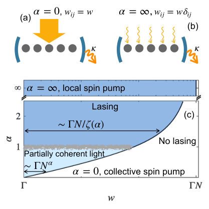
<figcaption class="paper-figure-caption"><b>Fig 1.</b> FIG. 1. Schematics of the setup for collective (a) and local (b) spin pump. (c) Sketch of the phase diagram that identifies param- eter regimes where atoms emit coherent/partially coherent light (las- ing, blue) vs thermal radiation (white) as a function of pump rate and the exponent α which controls the range of correlated pump wi j = w/(1 + |i −j|)α. Here w is plotted in logarithmic scale. We identify the upper bound on the transition from partially coherent to coherent light at α ≲1 which allows to reduce the pump intensity by at least factor log N compared to conventional SR lasing.</figcaption>
</figure>
<figure class="paper-figure-card">
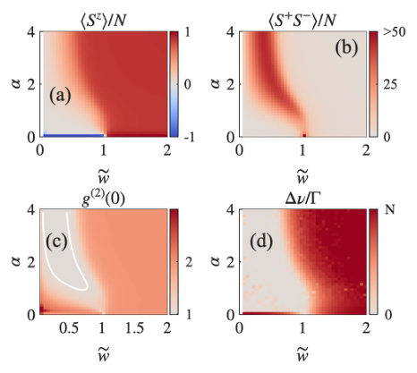
<figcaption class="paper-figure-caption"><b>Fig 2.</b> FIG. 2. Steady-state observables: (a) magnetization ⟨S z⟩, (b) inten- sity ⟨S +S −⟩, (c) second-order coherence g(2), and (d) linewidth ∆ν as functions of the normalized pump rate ˜w and the exponent α. The white contour in panel (c) delimits an approximate region of coher- ent emission. For α = 0, the pump and loss preserve strong per- mutation symmetry, which confines the dynamics to the symmetric Dicke manifold and precludes an extended coherent-lasing regime. For α ≳2, the pump becomes effectively short-ranged.</figcaption>
</figure>
<figure class="paper-figure-card">
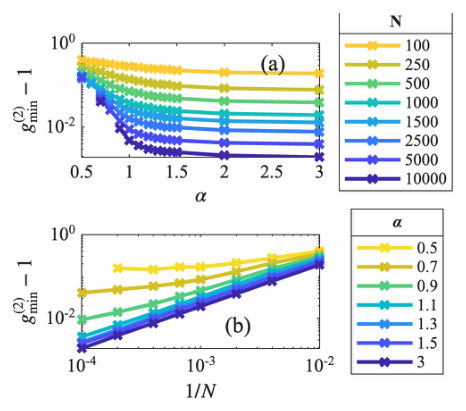
<figcaption class="paper-figure-caption"><b>Fig 3.</b> FIG. 3. Minimal value of the second-order coherence as a function of α (a) and N (b). The data place an upper bound near α ≈1 on the crossover to coherent emission and identify the region α &gt; 2 as effectively local, or short-ranged, pumping. The α = 0 result, for which the second-order coherence approaches g(2)(0) →6/5, is not shown here.</figcaption>
</figure>
<figure class="paper-figure-card">
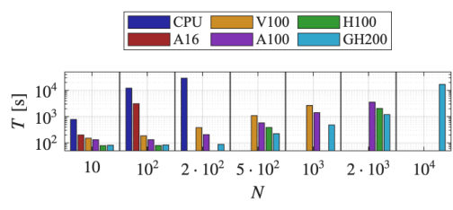
<figcaption class="paper-figure-caption"><b>Fig 4.</b> FIG. 4. Computational time required to simulate the TWA dynamics of a system with correlated pumping as a function of the system size, using a single-core CPU and five NVIDIA GPUs. For all simula- tions, we fix Ntrj = 213 and use the same number of integration steps, corresponding to a steady-state preparation time τr = 5 followed by an evolution time τ = 10. The decay rate Γ is adjusted with N so that ΓN∆t remains constant. This protocol isolates the dependence of the computational cost on the system size. Simulations were terminated when the computation time exceeded several hours.</figcaption>
</figure>
</div>

<p><strong>Summary.</strong> The paper analyzes superradiant lasing using a model of atoms driven by spatially correlated pumps, ranging from fully collective to purely local driving. By employing GPU-accelerated TWA simulations, the authors demonstrate that tuning the pump correlation exponent ($\alpha$) provides a powerful knob to suppress recoil heating while maintaining high optical coherence in the emitted light.</p>
<p><strong>Why it may be interesting.</strong> This work directly addresses open quantum systems dynamics in cavity QED/optics. The ability to tune coherence and dissipation independently via the pump structure ($\alpha$) is highly relevant for designing robust quantum light sources.</p>
<details>
<summary>Detailed structure</summary>
<p><strong>Main problem.</strong> The study investigates how varying the spatial correlation range ($\alpha$) of an external pump field affects the lasing dynamics in Superradiant (SR) lasers, balancing drive intensity, medium heating, and emitted light coherence.</p>
<p><strong>Main result.</strong> Correlated pumping allows for a significant reduction in the required driving strength compared to local pumping, while maintaining high optical coherence ($g^{(2)} 	o 1$) even when the pump correlation range is short ($\alpha \approx 1$).</p>
<p><strong>Method.</strong> The dynamics are simulated using the Truncated Wigner Approximation (TWA), which allows for efficient GPU-accelerated calculation of steady-state observables across a wide parameter space.</p>
<p><strong>Model / system.</strong> The system models $N$ two-level atoms arranged on a 1D chain, coupled to a single cavity mode. The pumping mechanism is generalized by a power-law decay $w_{ij} \propto (|	ext{i}-	ext{j}|+1)^{-\alpha}$, interpolating between collective ($\alpha=0$) and local ($\alpha	o\infty$) driving.</p>
<p><strong>Key observables.</strong> Steady-state magnetization ($\langle S_z 
angle$), intensity, second-order coherence ($g^{(2)}$), and linewidth ($\Delta
u$).</p>
<p><strong>Important parameters / regimes.</strong> The correlation exponent $\alpha$, the pump rate $w$, and system size $N$. Key regimes include $\alpha=0$ (collective) and $\alpha=\infty$ (local).</p>
<p><strong>Assumptions / limitations.</strong> The primary approximation used is the Truncated Wigner Approximation (TWA), which maps quantum dynamics onto classical stochastic trajectories.</p>
<p><strong>Figures summary.</strong> Figures illustrate phase diagrams showing transitions between different light regimes based on pump rate and $\alpha$, and compare observables like $g^{(2)}$ and linewidth for various pumping limits ($\alpha=0$ vs. finite $\alpha$).</p>
<p><strong>Paper structure.</strong> The paper establishes the physical model using a generalized Lindblad master equation, details the TWA methodology suitable for GPU computation, analyzes key observables (coherence, drive strength), and concludes by mapping out how the pump correlation acts as a tunable knob controlling these competing physical effects.</p>
</details>
<details>
<summary>Abstract</summary>
<p>Superradiant (SR) lasers store optical coherence in the atomic medium rather than the cavity field, but the incoherent drive that sustains inversion imposes a trade-off: local pumping yields coherent light at a rate that grows linearly with the atom number $N$, heating the medium through photon recoil, whereas fully collective pumping removes this scaling but limits the emission to partial coherence. We interpolate between these limits employing a spatially correlated pump on a chain of $N$ two-level atoms, with rates decaying with distance between atoms as a power law of exponent $α$. To study systems beyond the reach of exact solutions, we employ the Truncated Wigner Approximation (TWA), whose independent trajectories are ideally suited to GPU parallelism. Harnessing this, we perform a full scan of the steady-state observables for up to $10^4$ atoms at a computational cost that is practical. Our findings indicate that ultra-narrow emission persists for all $α$, while the coherence improves as the pump becomes shorter ranged, with $g^{(2)} \to 1$ surviving at least down to $α\approx 1$, indicating that fully coherent light thus does not require local pumping. The drive strength needed for lasing is reduced by a factor $N^{1-α}$ for $α< 1$, and by $\log N$ as $α\to 1$, parametrically suppressing recoil heating; notably, $α= 1$ matches the far-field envelope of dissipative couplings in free space. The correlation range of the pump thus acts as a knob trading drive intensity, and the heating it causes, against optical coherence.</p>
</details>
<p><sub><a href="#top">↑ back to top</a></sub></p>

<p><a id="paper-2608.10547"></a></p>
<h3 id="role-of-goldstone-mode-in-nonequilibrium-insulator-under-dc-electric-field"><a href="http://arxiv.org/abs/2608.10547v1">Role of Goldstone mode in nonequilibrium insulator under DC electric field</a></h3>
<p><strong>Authors:</strong> Xi Chen, Jong E. Han<br>
<strong>Type:</strong> theory · <strong>Category:</strong> strongly correlated electrons · <strong>PDF:</strong> <a href="https://arxiv.org/pdf/2608.10547v1">https://arxiv.org/pdf/2608.10547v1</a><br>
<strong>Analysis basis:</strong> full PDF text, analyzed in chunks
<strong>Topic relevance:</strong> 🔥 <code>Keldysh / 2PI / non-Gaussian methods</code> <strong>5/5</strong> · 🔥 <code>non-equilibrium universality</code> <strong>4/5</strong> · <code>driven-dissipative phase transition</code> <strong>3/5</strong> · <code>methods for driven-dissipative</code> <strong>3/5</strong> · <code>Frenkel-Kontorova</code> <strong>2/5</strong> · <code>analog quantum simulation</code> <strong>1/5</strong> · <code>correlated / nonlocal dissipation</code> <strong>1/5</strong> · <code>scars &amp; prethermalization</code> <strong>1/5</strong></p>
<div class="figure-strip-hint">↔ Scroll figures horizontally</div>
<div class="paper-figures-scroll">
<figure class="paper-figure-card">
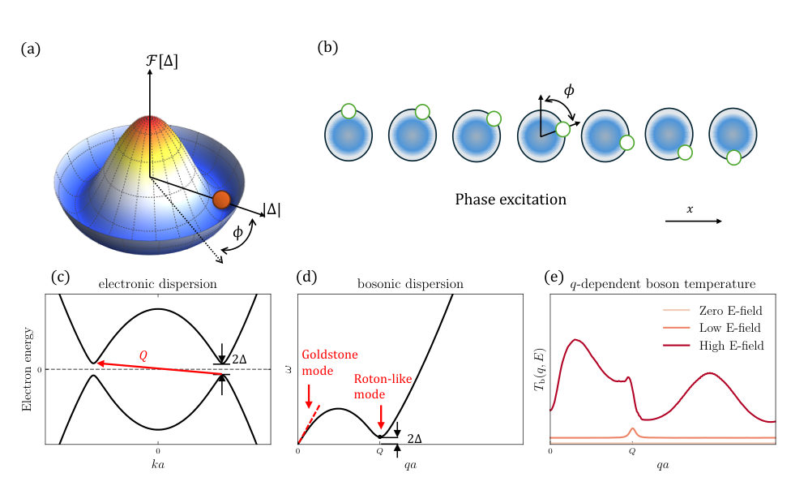
<figcaption class="paper-figure-caption"><b>Fig 1.</b> FIG. 1. (a) Schematic equilibrium free-energy landscape F[∆] for the complex order parameter ∆. At low temperature the minimum occurs at a finite amplitude |∆|, forming a Mexican-hat-like profile with a continuum of degenerate minima: the free energy is insensitive to the global phase ϕ, while the ground state spontaneously selects a specific ϕ. (b) Illustration of a spatially varying phase texture ϕ(x) along the chain at fixed |∆|. Collective behavior of the phase corresponds to the gapless collective excitation (Goldstone mode) associated with the spontaneously broken symmetry. (c) Schematic electronic band structure of the symmetry-broken insulating state, where a gap 2∆opens around the...</figcaption>
</figure>
<figure class="paper-figure-card">
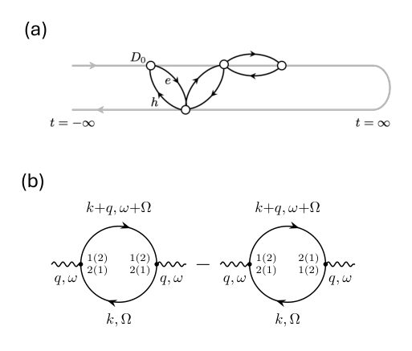
<figcaption class="paper-figure-caption"><b>Fig 2.</b> FIG. 2. (a) Diagrammatic representation of the phase-mode propagation along the Keldysh time-contour (grey line) me- diated by electron-hole excitations. The bare phase propa- gator (empty circle) introduced by the Hubbard-Stratonovich transformation is local in time. (b) The electron-hole bubble diagrams for the self-energy of the phase mode. The solid line is the electron GF with orbital indices 1 and 2, and the wavy line is the phase mode propagator.</figcaption>
</figure>
<figure class="paper-figure-card">
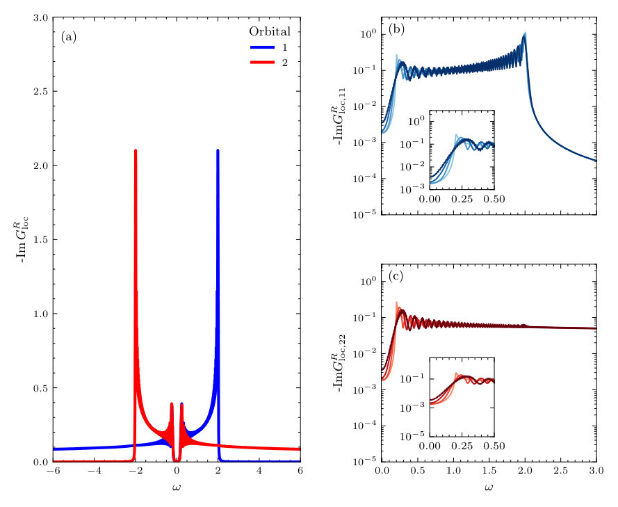
<figcaption class="paper-figure-caption"><b>Fig 3.</b> FIG. 3. (a) Local spectral function −Im GR loc(ω) for orbital 1 (blue) and orbital 2 (red) at E = 0.005, Γ = 0.005, ∆= 0.2, µ = 2 (see the text for discussion of the tight-binding parameter t). The bath temperature is fixed at Tbath = 0.001. (b),(c) Local spectral functions for orbital 1 and orbital 2, respectively, for a set of DC fields E ∈[0.001, 0.006] with the step 0.001 (from light to dark). The insets highlight the gap region, where a finite in-gap spectral weight develops due to coupling to the dissipative bath.</figcaption>
</figure>
<figure class="paper-figure-card">
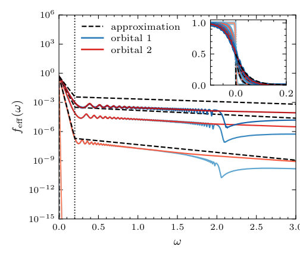
<figcaption class="paper-figure-caption"><b>Fig 4.</b> FIG. 4. Nonequilibrium distribution of electrons, feff(ω), on orbital 1(blue) and 2(red) at DC electric fields from E = 0 (light color) to E = 0.006 (dark) in steps of 0.002. At E = 0, feff(ω) reduces to the equilibrium Fermi-Dirac distribution. With increasing E, the Fermi-Dirac distribution is smeared around the Fermi energy, reflecting field-induced excitations. The black dashed lines show the analytic approximation of Eq. (43). The vertical dotted line marks the band edge ω = ∆. The inset plots the low-energy region on a linear scale to highlight the field-induced smearing near Fermi-level. The two orbitals exhibit nearly identical distribution, with only small difference near the band...</figcaption>
</figure>
<figure class="paper-figure-card">
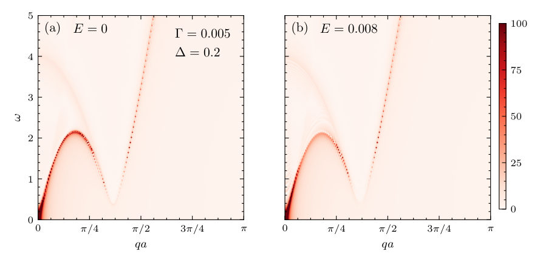
<figcaption class="paper-figure-caption"><b>Fig 5.</b> FIG. 5. Color maps of the real part of the retarded boson propagator, |Re DR(q, ω)|, used to identify the pole structure corresponding to the phase mode. Panels (a) and (b) show the numerical result at E = 0 and E = 0.008, respectively, at dissipation Γ = 0.005, gap parameter ∆= 0.2 and lattice constant a = 0.4. In both panels, well-defined dispersion relations confirm the existence of the Goldstone mode. At E = 0 the linear dispersion relation agrees with the equilibrium benchmark; under the applied field the dispersion remains essentially unchanged, indicating that the Goldstone mode persists in the nonequilibrium steady state while the system remains gapped.</figcaption>
</figure>
</div>

<p><strong>Summary.</strong> This work proposes that the resistive breakdown of ordered insulators under a DC electric field is governed by the excitation of gapless Goldstone modes associated with broken symmetry. Using Keldysh Green's functions, the authors demonstrate that these collective bosonic excitations heat up much faster than the electrons, predicting a lower critical switching field than single-particle theories suggest.</p>
<p><strong>Why it may be interesting.</strong> The focus on collective bosonic modes (Goldstone mode) mediating transport breakdown is highly relevant to understanding non-equilibrium dynamics in correlated electron systems, bridging concepts from superfluidity/CDWs into electronic transport physics.</p>
<details>
<summary>Detailed structure</summary>
<p><strong>Main problem.</strong> The paper investigates an alternative mechanism for resistive breakdown (insulator-to-metal transition) in ordered insulators under a DC electric field, moving beyond single-electron excitation theories.</p>
<p><strong>Main result.</strong> It shows that fluctuations of the order parameter via the gapless Goldstone mode can heat up much more rapidly than electronic excitations, suggesting collective phase dynamics significantly reduce the critical switching field.</p>
<p><strong>Method.</strong> The analysis employs the Keldysh Green's function formalism to study non-equilibrium steady states under an applied electric field.</p>
<p><strong>Model / system.</strong> The system is modeled using a Hubbard-like Hamiltonian in 1D with inter-band interactions, leading to spontaneous symmetry breaking and the emergence of both gapped (Higgs) and gapless (Goldstone) bosonic excitations.</p>
<p><strong>Key observables.</strong> Effective temperatures of the Goldstone mode ($T_b$) versus electronic temperature ($T_e$), and the critical threshold electric fields ($E_{b	ext{th}}$ vs $E_{e	ext{th}}$).</p>
<p><strong>Important parameters / regimes.</strong> The gap parameter ($\Delta$), hopping integral ($t$), DC electric field strength, and the ratio of $\Delta/\Gamma$ (where $\Gamma$ is a dissipation rate).</p>
<p><strong>Assumptions / limitations.</strong> The analysis uses approximations such as the Random-Phase Approximation (RPA) for boson self-energies and initially neglects spatial inhomogeneity.</p>
<p><strong>Figures summary.</strong> Figures schematically illustrate the free energy landscape, phase textures, electronic band gaps opening at a wavevector Q, and the resulting bosonic dispersion relation, comparing spectral features under different electric fields.</p>
<p><strong>Paper structure.</strong> The paper progresses from establishing the physical context (resistive switching) to developing the theoretical framework using Keldysh GF formalism. It first analyzes equilibrium excitations, then extends this to non-equilibrium steady states by incorporating dissipation and the DC field, culminating in a comparison of effective temperatures for electrons and bosons.</p>
</details>
<details>
<summary>Abstract</summary>
<p>Measurements of resistive breakdown in electronic systems under a DC electric field have shown that the threshold fields for the insulator-to-metal transition are significantly lower than predicted by single-electron excitation scenarios, such as the Landau-Zener theory. In this work, we propose an alternate mechanism of destabilizing ordered insulators under a DC electric field by fluctuations of the order parameters through the Goldstone mode excitation. The low-energy bosonic excitations receive energy from accelerated electrons and thus destroy the spontaneous symmetry breaking. Using the Keldysh Gree's function formalism, we numerically confirm that the Goldstone mode remains well-defined in the nonequilibrium steady state, while its nonequilibrium excitations are sensitive to the electric field. The effective temperature of the Goldstone mode increases much more rapidly than the electronic effective temperature, with the bosonic threshold field significantly smaller than the electronic one, which suggests that collective phase dynamics may further reduce the transition field to the experimental range via a purely electronic mechanism.</p>
</details>
<p><sub><a href="#top">↑ back to top</a></sub></p>

<p><a id="paper-2608.10639"></a></p>
<h3 id="dynamical-crossover-in-landaumath43mathzener-tunneling-in-dissipative-rydberg-lattices"><a href="http://arxiv.org/abs/2608.10639v1">Dynamical Crossover in Landau$-$Zener Tunneling in Dissipative Rydberg Lattices</a></h3>
<p><strong>Authors:</strong> Suvechha Indu, Raka Dasgupta<br>
<strong>Type:</strong> theory · <strong>Category:</strong> other · <strong>PDF:</strong> <a href="https://arxiv.org/pdf/2608.10639v1">https://arxiv.org/pdf/2608.10639v1</a><br>
<strong>Analysis basis:</strong> full PDF text, analyzed in chunks
<strong>Topic relevance:</strong> 🔥 <code>Rydberg arrays</code> <strong>4/5</strong> · 🔥 <code>analog quantum simulation</code> <strong>4/5</strong> · 🔥 <code>driven-dissipative phase transition</code> <strong>4/5</strong> · <code>methods for driven-dissipative</code> <strong>3/5</strong> · <code>non-equilibrium universality</code> <strong>3/5</strong> · <code>Keldysh / 2PI / non-Gaussian methods</code> <strong>2/5</strong> · <code>correlated / nonlocal dissipation</code> <strong>2/5</strong> · <code>quantum measurements</code> <strong>2/5</strong> · <code>Tavis-Cummings &amp; cavity-many-emitter</code> <strong>1/5</strong> · <code>scars &amp; prethermalization</code> <strong>1/5</strong></p>
<div class="figure-strip-hint">↔ Scroll figures horizontally</div>
<div class="paper-figures-scroll">
<figure class="paper-figure-card">
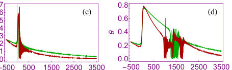
<figcaption class="paper-figure-caption"><b>Fig 1.</b> FIG. 1. Order parameter (θ) vs time (t) plot (phase plot) extracted from Linblad system (maroon) and non-Hermitian system (green). For moderate dissipation, the parameters are Ω= 0.5, γ = 0.4, v = 0.01 with (a) V = 4, (b) V = 30. For a higher V, the peaks show a better overlap. For low dissipation, the parameters are Ω= 0.3, γ = 0.001, v = 0.01, with (c) V = 1 (d) V = 30. Here, the phase plots from the two approaches match reasonable well.</figcaption>
</figure>
<figure class="paper-figure-card">
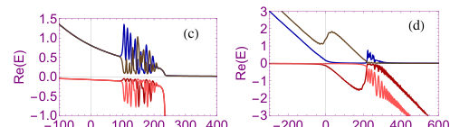
<figcaption class="paper-figure-caption"><b>Fig 2.</b> FIG. 2. Real part of the energy eigen-spectra of the system showing avoided crossings. For γ = 0.4, Ω= 0.5, v = 0.01 and (a) V = 3: there is no loop in the spectra, (b) V = 4: a loop appears near the avoided crossing, (c) V = 5: oscillations appear in the loop. For γ = 0.001, Ω= 0.3, v = 0.01, (d) V = 4: there are sublattice- dependent branches in the spectra. Here, the colors, blue, brown, pink and maroon represent four branches of the eigen-energy spectra of the two state-two sublattice system.</figcaption>
</figure>
<figure class="paper-figure-card">
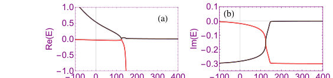
<figcaption class="paper-figure-caption"><b>Fig 3.</b> FIG. 3. Real (Re(E)) and imaginary (Im(E)) parts of the eigen-energy spectra at γ = 0.6, V = 5, v = 0.01, Ω= 0.3. (a) Real spectrum, (b) imaginary spectrum. Here, Ω/γ = 1/2, which is the critical Ω/γ ratio, where, both the spectra undergo real crossings.</figcaption>
</figure>
<figure class="paper-figure-card">
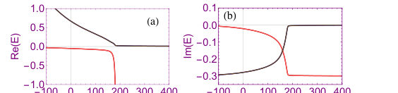
<figcaption class="paper-figure-caption"><b>Fig 4.</b> FIG. 5. Real (Re(E)) and imaginary (Im(E)) part of the eigen-energy spectra at γ = 0.6, V = 5, v = 0.01, Ω= 0.4. (a) Real spectrum, (b) imaginary spectrum. Here, Ω/γ ratio is above the critical value, where, avoided crossing is in the real spectrum and, the imaginary spectrum contains real crossing.</figcaption>
</figure>
<figure class="paper-figure-card">
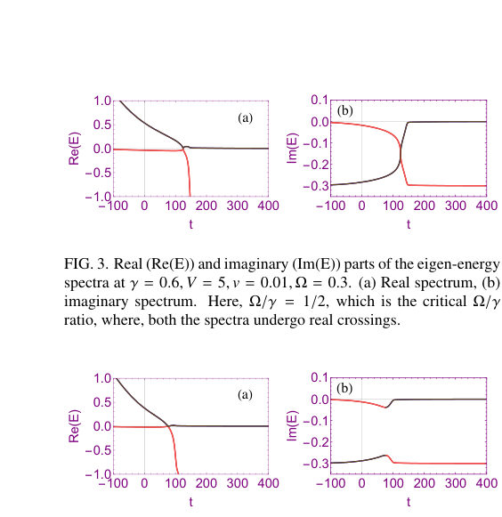
<figcaption class="paper-figure-caption"><b>Fig 5.</b> FIG. 4. Real (Re(E)) and imaginary (Im(E)) part of the eigen-energy spectra at γ = 0.6, V = 5, v = 0.01, Ω= 0.2. (a) Real spectrum, (b) imaginary spectrum. Here, Ω/γ ratio is below the critical value, where, avoided crossing is in the imaginary spectrum and the real spectrum contains true crossing.</figcaption>
</figure>
</div>

<p><strong>Summary.</strong> The paper analyzes excitation dynamics in dissipative Rydberg lattices by studying Landau-Zener tunneling under time-varying detuning. Using both master equation and non-Hermitian Hamiltonian formalisms, the authors characterize a dynamical crossover regime controlled by the blockade strength. This crossover dictates whether the system exhibits uniform or sublattice-dependent transition probabilities near avoided crossings.</p>
<p><strong>Why it may be interesting.</strong> This work is highly relevant as it combines concepts from open quantum systems (dissipation, Lindblad dynamics) with strongly correlated physics (Rydberg interactions, magnetic order) and fundamental non-adiabatic processes (LZ tunneling), providing a detailed map of dynamic phase transitions in controllable quantum simulators.</p>
<details>
<summary>Detailed structure</summary>
<p><strong>Main problem.</strong> The study investigates excitation dynamics, specifically Landau-Zener tunneling, within a dissipative Rydberg lattice subjected to time-dependent detuning.</p>
<p><strong>Main result.</strong> The work identifies a dynamical crossover regime where the sublattice population imbalance transitions from vanishing (identical LZ probabilities) to persisting (sublattice-dependent probabilities) as the blockade strength increases.</p>
<p><strong>Method.</strong> Analysis employs two complementary theoretical frameworks: solving the Lindblad master equation via mean-field approximation and utilizing an effective non-Hermitian Hamiltonian approach for spectral analysis.</p>
<p><strong>Model / system.</strong> The system is a Rabi-coupled dissipative Rydberg lattice, modeled by a Hamiltonian incorporating detuning, Rabi coupling ($\Omega$), and nearest-neighbor interaction ($V$). Dissipation is included via the Lindblad master equation.</p>
<p><strong>Key observables.</strong> Landau-Zener transition probabilities (PLZ), sublattice population imbalance, complex energy spectrum eigenvalues, and order parameter $   heta$.</p>
<p><strong>Important parameters / regimes.</strong> Rydberg interaction strength ($V$), Rabi coupling ($\Omega$), dissipation rate ($\gamma$), and the detuning profile $\Delta(t)$. Critical ratios like $\Omega/\gamma$ define spectral regimes.</p>
<p><strong>Assumptions / limitations.</strong> The non-Hermitian description is an approximation that neglects explicit quantum jump terms, though it proves useful for analyzing avoided crossings. Mean-field approximations are used for interactions.</p>
<p><strong>Figures summary.</strong> Figures likely show energy spectra loops/branches indicating antiferromagnetic order (as $V$ increases), and phase plots illustrating the crossover between regimes of identical vs. distinct sublattice probabilities based on parameters like $\Omega/\gamma$.</p>
<p><strong>Paper structure.</strong> The paper builds by first setting up the full dynamics via the Lindblad master equation, then deriving and analyzing an effective non-Hermitian Hamiltonian approximation. The core analysis focuses on mapping out parameter regimes (governed by $V$ vs. $\Omega/\gamma$) that dictate the nature of the LZ tunneling crossover.</p>
</details>
<details>
<summary>Abstract</summary>
<p>In this work, we investigate the excitation dynamics of a Rabi-coupled dissipative Rydberg lattice with a time-dependent detuning. The system is analyzed using (i) a Lindblad master equation within a mean-field approximation and (ii) an effective non-Hermitian Hamiltonian framework. While the mean-field approach captures the emergence of an antiferromagnetic order in the Rydberg excitation profile, the non-Hermitian description provides direct insight into the complex energy spectrum and its avoided crossings, which govern the Landau$-$Zener dynamics. We identify a regime in which the sublattice population imbalance vanishes near the avoided crossing, resulting in identical Landau$-$Zener probabilities on the two sublattices. Beyond a critical effective blockade strength there is a dynamical crossover to another regime in which the sublattice population imbalance persists through the avoided crossing, giving rise to sublattice-dependent Landau$-$Zener probabilities. Furthermore, Rydberg interactions prolong the lifetime of Landau$-$Zener-induced excitations in the presence of weak dissipation and strong Rabi coupling. In contrast, for weak Rabi coupling, the Rydberg blockade inhibits excitation and suppresses the Landau$-$Zener transition probability.</p>
</details>
<p><sub><a href="#top">↑ back to top</a></sub></p>

<p><a id="paper-2608.10895"></a></p>
<h3 id="boosting-self-hybridized-exciton-polaritons-with-metal-clad-ws2-waveguides"><a href="http://arxiv.org/abs/2608.10895v1">Boosting self hybridized exciton polaritons with metal clad WS2 waveguides</a></h3>
<p><strong>Authors:</strong> Filip Majstorovic, Masoud Taleb, Victor DeManuel-Gonzalez, Kai Rossnagel, Nahid Talebi<br>
<strong>Type:</strong> both · <strong>Category:</strong> other · <strong>PDF:</strong> <a href="https://arxiv.org/pdf/2608.10895v1">https://arxiv.org/pdf/2608.10895v1</a><br>
<strong>Analysis basis:</strong> full PDF text, analyzed in chunks
<strong>Topic relevance:</strong> 🔥 <code>analog quantum simulation</code> <strong>4/5</strong> · <code>driven-dissipative phase transition</code> <strong>3/5</strong> · <code>methods for driven-dissipative</code> <strong>3/5</strong> · <code>quantum optics experiment</code> <strong>3/5</strong> · <code>Tavis-Cummings &amp; cavity-many-emitter</code> <strong>2/5</strong> · <code>interference shaping light</code> <strong>2/5</strong> · <code>non-equilibrium universality</code> <strong>2/5</strong> · <code>Keldysh / 2PI / non-Gaussian methods</code> <strong>1/5</strong> · <code>correlated / nonlocal dissipation</code> <strong>1/5</strong> · <code>quantum measurements</code> <strong>1/5</strong></p>
<div class="figure-strip-hint">↔ Scroll figures horizontally</div>
<div class="paper-figures-scroll">
<figure class="paper-figure-card">
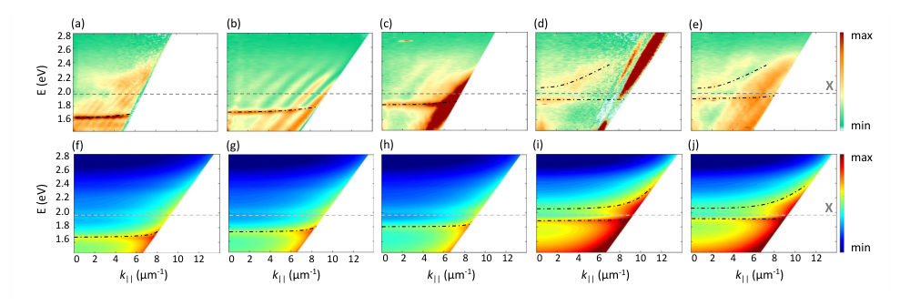
<figcaption class="paper-figure-caption"><b>Fig 1.</b> Figure 1: Momentum-resolved cathodoluminescence spectra of Au/WS2/Au samples. The WS2 thicknesses in (a) and (b) were independently determined by AFM to be 130 nm and 120 nm, while the thicknesses in (c)–(e) were estimated by comparison with the calculated dispersion relations shown in (f)–(j). The grey dashed line indicates the A-exciton energy at 1.97 eV. (f)–(j) Calculated dispersion relations of an idealized Au/WS2/Au system for WS2 thicknesses of 130 nm, 120 nm, 110 nm, 95 nm, and 90 nm, respectively. The calculated dispersions in (i) and (j), together with the corresponding experimental maps in (d) and (e), show a clear anticrossing near the A-exciton energy.</figcaption>
</figure>
<figure class="paper-figure-card">
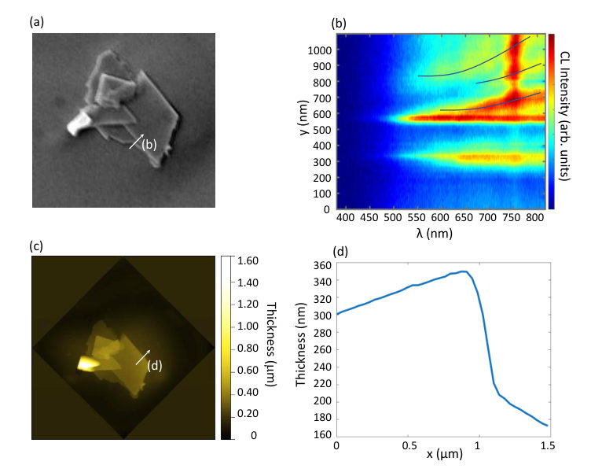
<figcaption class="paper-figure-caption"><b>Fig 2.</b> Figure 2: (a) SEM image of the WS2 flake with a thickness of approximately 130 nm. (b) Spatially resolved CL map acquired over a distance of 1 µm along the path indicated by the white arrow in (a). A pronounced resonance is observed around 750 nm, which is associated with the lower polariton branch of the guided mode identified in the momentum-resolved CL spectrum in Figure 1(a). (c) AFM image of the same flake, where the color scale represents the sample height. The white arrow marks the position of the height profile shown in (d). (d) One-dimensional height profile across the flake, yielding a thickness of approximately 130nm. The slope in the height profile is attributed to a bubble...</figcaption>
</figure>
<figure class="paper-figure-card">
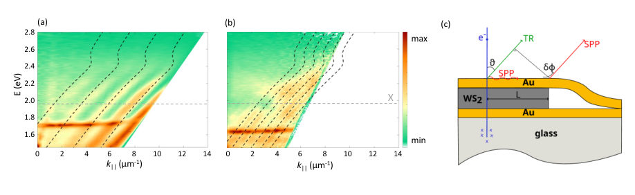
<figcaption class="paper-figure-caption"><b>Fig 3.</b> Figure 3: Experimental angle-resolved cathodoluminescence spectra of Au/WS2/Au flakes with WS2 thicknesses of (a) 120 nm and (b) 130 nm, corresponding to the samples already shown in Figure 1. The maps are overlaid with fits to calculated branches arising from the interference of surface plasmon polaritons (SPPs) and transition radiation (TR). The grey dashed line indicates the A-exciton energy at 1.97 eV. (c) Schematic side view of the sample and of the interference mechanism: SPPs are excited at the electron-beam impact position, propagate towards the flake edge, are scattered there into the far field, and interfere with transition radiation.</figcaption>
</figure>
<figure class="paper-figure-card">
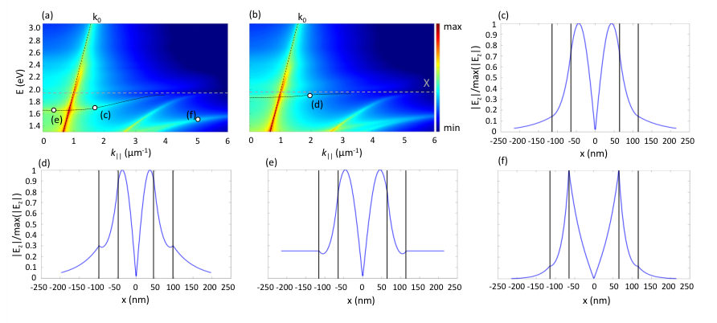
<figcaption class="paper-figure-caption"><b>Fig 4.</b> Figure 4: (a,b) Calculated dispersion relations of idealized Au/WS2/Au structures with WS2 thicknesses of 130 nm and 95 nm, including the region outside the light cone. The white dots mark the positions at which the corresponding field profiles shown in (c)–(f) were calculated. The grey dashed line indicates the A-exciton energy at 1.97 eV. (c)–(f) Normalized electric field profiles, |Ez|/ max(|Ez|), for the modes marked in (a) and (b). The black vertical lines indicate the interfaces between air, gold, and WS2. Panels (c) and (d) correspond to the lower polariton outside the light cone, while (e) shows the lower polariton inside the light cone, where the field is no longer evanescent in...</figcaption>
</figure>
<figure class="paper-figure-card">
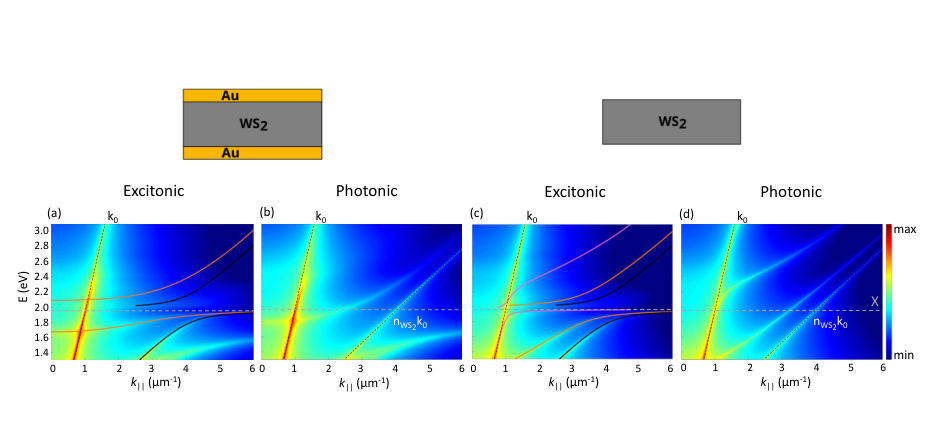
<figcaption class="paper-figure-caption"><b>Fig 5.</b> Figure 5: (a) Calculated dispersion relation of the Au/WS2/Au structure with a WS2 thickness of 130 nm and a gold thickness of 50 nm, including the region outside the light cone. Hopfield fits to the lower and upper polariton branches of the guided mode and of the bent light line in WS2 are overlaid. For both the black and orange branches, the coupling strength is 190 meV. (b) Dispersion relation of the same structure using the constant-plus-Drude background permittivity of WS2 instead of the full WS2 dielectric function, so that the excitonic resonances and the UV oscillator are removed and only the optical modes remain visible. The gold thickness is again 50 nm. (c) Dispersion relation...</figcaption>
</figure>
</div>

<p><strong>Summary.</strong> The researchers demonstrate that embedding $   ext{WS}_2$ excitons within metal-clad waveguides ($ ext{Au}/    ext{WS}_2/  ext{Au}$) significantly boosts the coupling strength between excitons and guided photons. By combining theoretical modeling with momentum-resolved cathodoluminescence, they confirm enhanced polariton formation, offering a tunable platform for controlling light-matter interactions.</p>
<p><strong>Why it may be interesting.</strong> This work is highly relevant as it deals with engineered light-matter interaction in 2D materials, a core topic in quantum optics and open quantum systems research, particularly concerning cavity/waveguide QED effects.</p>
<details>
<summary>Detailed structure</summary>
<p><strong>Main problem.</strong> The primary goal is boosting the coupling strength between excitons (in $ ext{WS}_2$) and guided photonic modes within metal-clad waveguides.</p>
<p><strong>Main result.</strong> The gold cladding significantly enhances the exciton-photon coupling strength ($G$) to $190 	ext{ meV}$, demonstrating a robust method for controlling light-matter interactions in hybrid heterostructures.</p>
<p><strong>Method.</strong> The study combines theoretical modeling (solving Maxwell's equations) with experimental characterization using momentum-resolved cathodoluminescence ($ ext{CL}$) spectroscopy.</p>
<p><strong>Model / system.</strong> The system is an $  ext{Au}/    ext{WS}_2/  ext{Au}$ metal-clad waveguide. The physics is described by analyzing the formation of self-hybridized exciton polaritons, often modeled using a Hopfield Hamiltonian to quantify coupling strength ($G$).</p>
<p><strong>Key observables.</strong> Momentum-resolved $    ext{CL}$ spectra showing anticrossing behavior, dispersion relations for lower and upper polariton branches, and calculated electric field profiles.</p>
<p><strong>Important parameters / regimes.</strong> Coupling strength $G$ (up to $190 	ext{ meV}$), exciton energy ($  ext{A-exciton}$), guided mode resonance frequency, and waveguide thickness.</p>
<p><strong>Assumptions / limitations.</strong> The $    ext{CL}$ detection in the far field only captures radiatively outcoupled parts of the dispersion; the analysis relies on fitting polariton branches using established Hamiltonian models.</p>
<p><strong>Figures summary.</strong> Figures show momentum-resolved CL spectra confirming resonances, calculated and measured full dispersion relations for varying thicknesses, and electric field profiles distinguishing mode confinement.</p>
<p><strong>Paper structure.</strong> The paper progresses from identifying initial resonances via $ ext{CL}$ spectroscopy to theoretically modeling the coupling using Hamiltonian approaches. It compares results from metal-clad vs. uncladded structures to quantify enhancement and discusses implications for slow polariton propagation.</p>
</details>
<details>
<summary>Abstract</summary>
<p>The formation of Fabry Perot and guided wave self hybridized exciton polaritons in two dimensional materials results in long range exciton energy transfer and strong exciton exciton interactions. Here, we demonstrate that the coupling strength between photonic modes and excitons is significantly boosted by embedding the active excitonic layer in a metal clad WS2 waveguide. The photonic modes in this waveguide exhibit modified dispersion properties for both Fabry Perot type and guided wave exciton polaritons compared to pure WS2 flakes, and show an increased couplingr strength. Our results provide a robust approach for controlling exciton photon interactions and their coupling strength in hybrid heterostructures.</p>
</details>
<p><sub><a href="#top">↑ back to top</a></sub></p>

<p><a id="paper-2608.11189"></a></p>
<h3 id="floquet-greens-functions-for-lattice-electrons-driven-by-gaussian-quantum-light"><a href="http://arxiv.org/abs/2608.11189v1">Floquet Green's functions for lattice electrons driven by Gaussian quantum light</a></h3>
<p><strong>Authors:</strong> Atsushi Ono<br>
<strong>Type:</strong> theory · <strong>Category:</strong> other · <strong>PDF:</strong> <a href="https://arxiv.org/pdf/2608.11189v1">https://arxiv.org/pdf/2608.11189v1</a><br>
<strong>Analysis basis:</strong> full PDF text, analyzed in chunks
<strong>Topic relevance:</strong> 🔥 <code>Keldysh / 2PI / non-Gaussian methods</code> <strong>4/5</strong> · <code>analog quantum simulation</code> <strong>3/5</strong> · <code>driven-dissipative phase transition</code> <strong>3/5</strong> · <code>interference shaping light</code> <strong>3/5</strong> · <code>methods for driven-dissipative</code> <strong>3/5</strong> · <code>correlated / nonlocal dissipation</code> <strong>2/5</strong> · <code>quantum measurements</code> <strong>2/5</strong> · <code>non-equilibrium universality</code> <strong>1/5</strong> · <code>quantum optics experiment</code> <strong>1/5</strong></p>
<div class="figure-strip-hint">↔ Scroll figures horizontally</div>
<div class="paper-figures-scroll">
<figure class="paper-figure-card">
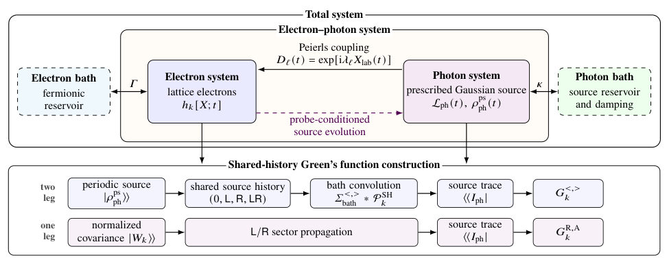
<figcaption class="paper-figure-caption"><b>Fig 1.</b> FIG. 1. Overview of the prescribed-source framework. The total system consists of the electron–photon system coupled to a fermionic electron bath and a photon source bath. The photon system is a reservoir-stabilized Gaussian source with steady state 𝜌ss ph, fixed by the parameters 𝛼0, 𝑟, and 𝜙0; it acts on the lattice electrons through the gauge-covariant Peierls link operators 𝐷ℓ(𝑡) [Eq. (26)]. The lower panel summarizes the shared-history construction: four active-leg sectors and six endpoint orderings yield a two-leg response that is convolved with 𝛴&lt;,&gt; bath to obtain 𝐺&lt;,&gt; 𝑘 , while the equal-time covariance 𝑊𝑘supplies the one-leg evaluation of 𝐺R,A 𝑘 . The source trace with ⟨⟨𝐼ph| is...</figcaption>
</figure>
<figure class="paper-figure-card">
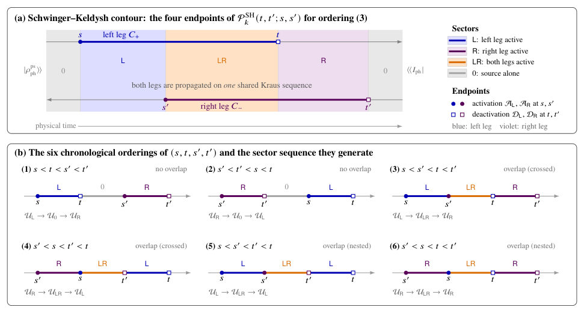
<figcaption class="paper-figure-caption"><b>Fig 2.</b> FIG. 2. Schwinger–Keldysh representation of the shared-history two-leg kernel. (a) Contour for the four-endpoint kernel PSH 𝑘(𝑡, 𝑡′; 𝑠, 𝑠′) of Eq. (91), drawn for ordering (3), 𝑠&lt; 𝑠′ &lt; 𝑡&lt; 𝑡′. The left (𝐶+) and right (𝐶−) legs are switched on at 𝑠and 𝑠′ by AL and AR (filled circles) and switched off at 𝑡and 𝑡′ by DL and DR (open squares). The kernel starts from |𝜌ps ph(𝑡&lt;)⟩⟩at 𝑡&lt; = min(𝑠, 𝑠′) and is closed by ⟨⟨𝐼ph| at max(𝑡, 𝑡′); both legs are propagated on one shared source history, and the shading marks the active sector 𝑞∈{0, L, R, LR}. (b) The six chronological domains of (𝑠, 𝑡, 𝑠′, 𝑡′) with the corresponding sector sequences. Orderings (1) and (2) are nonoverlap contributions with an...</figcaption>
</figure>
<figure class="paper-figure-card">
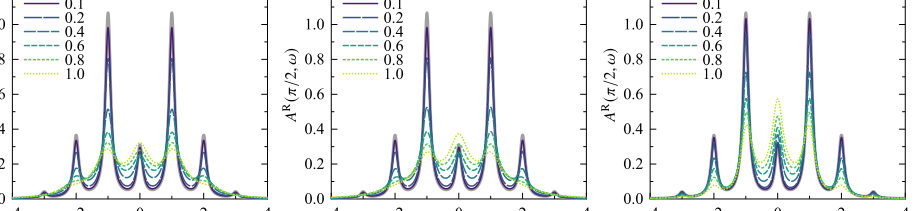
<figcaption class="paper-figure-caption"><b>Fig 3.</b> FIG. 3. Period-averaged spectral function, 𝐴R(𝑘, 𝜔), at 𝑘= 𝜋/2 for coherent Gaussian sources with fixed classical Peierls amplitude 𝐴cl = 1.1 and decreasing quantum coupling 𝜆, compared across three descriptions: (a) Born, (b) SCBA, and (c) the shared-history construction. The gray reference in each panel shows the classical Floquet result with the same 𝐴cl and wide-band bath. The source damping is 𝜅= 1.</figcaption>
</figure>
<figure class="paper-figure-card">
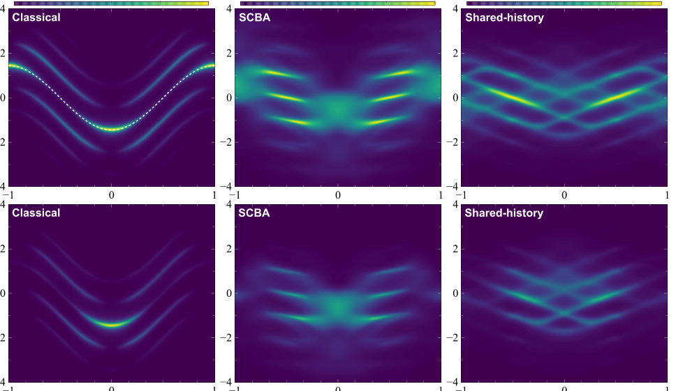
<figcaption class="paper-figure-caption"><b>Fig 4.</b> FIG. 4. Period-averaged retarded and occupied spectral weights for a finite-𝜆coherent source with 𝐴cl = 1.1 and 𝜆= 1, computed with (left) classical Floquet theory, (middle) SCBA, and (right) the shared-history construction. The upper panels show 𝐴R(𝑘, 𝜔), and the lower panels show 𝐴&lt;(𝑘, 𝜔). In each column, the color scale is shared between the two panels and its maximum is set to the maximum of 𝐴R(𝑘, 𝜔) in that column. The dotted lines indicate the corresponding static dispersion reference ¯𝜀𝑘. The source damping is 𝜅= 0.1.</figcaption>
</figure>
<figure class="paper-figure-card">
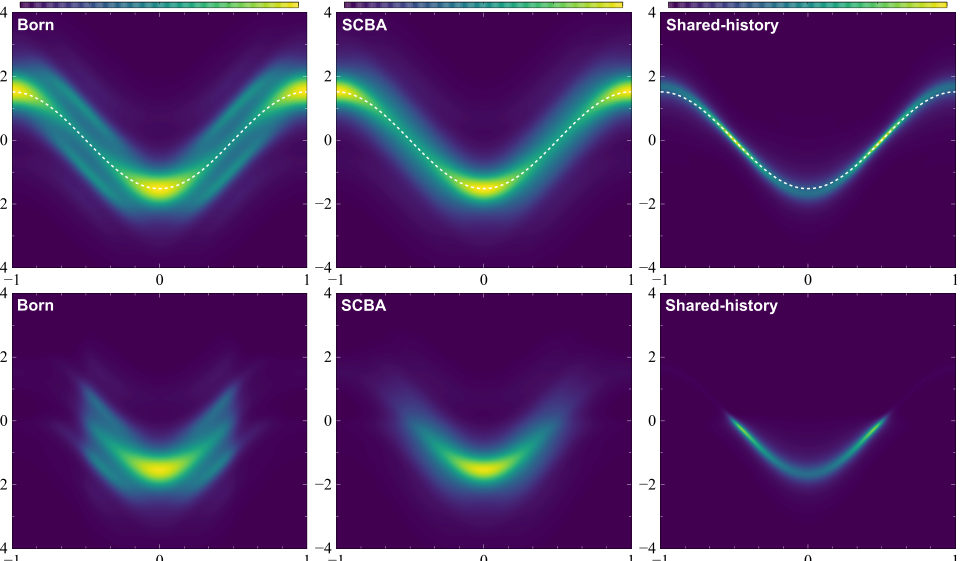
<figcaption class="paper-figure-caption"><b>Fig 5.</b> FIG. 5. Period-averaged retarded and occupied spectral weights for squeezed vacuum with 𝑟= 4 and 𝜅= 1, computed using (left) the Born approximation, (middle) SCBA, and (right) the shared-history construction. The upper panels show 𝐴R(𝑘, 𝜔), and the lower panels show 𝐴&lt;(𝑘, 𝜔). In each column, the color scale is shared between the two panels and its maximum is set to the maximum of 𝐴R(𝑘, 𝜔) in that column. The dotted lines indicate the corresponding static dispersion reference ¯𝜀𝑘. The coupling is 𝜆= 0.02.</figcaption>
</figure>
</div>

<p><strong>Summary.</strong> This paper develops a rigorous theoretical framework for studying lattice electrons driven by external, nonclassical quantum light fields. It formulates Floquet Green's functions using a shared-history approach that treats the full quantum nature of the driving source nonperturbatively. The results demonstrate how squeezing and phase control can engineer electronic properties beyond what classical laser drives allow.</p>
<p><strong>Why it may be interesting.</strong> This bridges advanced topics in Floquet engineering (time periodicity) with open quantum systems theory (reservoir/bath dynamics) by incorporating the full quantum nature of the driving field (squeezing), which is highly relevant to modern AMO and quantum optics research.</p>
<details>
<summary>Detailed structure</summary>
<p><strong>Main problem.</strong> The primary goal is formulating Floquet Green's functions for noninteracting lattice electrons driven by an externally prescribed, reservoir-stabilized Gaussian quantum light source.</p>
<p><strong>Main result.</strong> The work provides a theoretical framework for quantum Floquet engineering of condensed matter systems using external quantum light sources, showing finite-coupling quantum corrections beyond classical drives.</p>
<p><strong>Method.</strong> It employs a shared-history formulation for two-time Green's functions, treating the nonperturbative Peierls coupling and incorporating bath convolutions derived from canonical anticommutation relations.</p>
<p><strong>Model / system.</strong> The system consists of noninteracting single-band lattice electrons coupled to an external Gaussian quantum light source (reservoir) via the Peierls mechanism. The electron bath provides local linewidths, while the source is modeled as a squeezed coherent steady state.</p>
<p><strong>Key observables.</strong> Spectral reconstruction and occupancy redistribution are key observables, which can be controlled by the squeezing parameter and phase of the input light.</p>
<p><strong>Important parameters / regimes.</strong> The squeezing parameter ($r$) and phase ($\phi_0$) of the quantum source provide control knobs beyond classical amplitude modulation. The coupling strength ($\lambda$) is also critical.</p>
<p><strong>Assumptions / limitations.</strong> Key assumptions include noninteracting single-band electrons, a prescribed (non-backacting) external light source, and the validity of Gaussian approximations for expectation values involving the Peierls exponentials.</p>
<p><strong>Figures summary.</strong> Figure 1 provides an overview diagram illustrating the components: electron–photon system, electron bath, photon source reservoir, and the shared-history construction process involving four active-leg sectors.</p>
<p><strong>Paper structure.</strong> The paper develops the formalism by defining the coupled Hamiltonian, deriving the Green's function structure using a shared-history approach, treating the Peierls coupling nonperturbatively, and concluding with numerical demonstrations on a 1D model showing quantum corrections.</p>
</details>
<details>
<summary>Abstract</summary>
<p>We formulate Floquet Green's functions for noninteracting single-band lattice electrons driven by a reservoir-stabilized single-mode Gaussian quantum light source. The source is prescribed externally and is not updated by the many-electron polarization, while an active electronic probe still conditions the source evolution through the Peierls coupling. The two time arguments of a Green's function share one source history: the lesser and greater components are obtained by convolving a shared-history four-endpoint kernel with the continuous bath kernels before the final source trace, while the bath canonical anticommutation relation yields an equal-time covariance that seeds the retarded and advanced one-leg propagations. The Peierls coupling is treated nonperturbatively within the prescribed-source model, and classical Floquet theory is recovered in the appropriate limit. Numerical calculations on a minimal one-dimensional model show finite-coupling quantum-source corrections beyond a prescribed classical drive, together with spectral reconstruction and occupancy redistribution for squeezed vacuum and squeezed coherent sources. The squeezing parameter and phase provide additional control knobs, beyond classical amplitude modulation, for both sideband structure and occupied weight. This work provides a theoretical framework for quantum Floquet engineering of condensed matter with an externally prescribed quantum light source.</p>
</details>
<p><sub><a href="#top">↑ back to top</a></sub></p>

<p><a id="paper-2608.10948"></a></p>
<h3 id="steady-state-phase-transition-in-one-dimensional-hybrid-contact-process"><a href="http://arxiv.org/abs/2608.10948v1">Steady-state phase transition in one-dimensional hybrid contact process</a></h3>
<p><strong>Authors:</strong> Lin Shang, Shuai Geng, Xingli Li, Jiasen Jin<br>
<strong>Type:</strong> theory · <strong>Category:</strong> statistical mechanics · <strong>PDF:</strong> <a href="https://arxiv.org/pdf/2608.10948v1">https://arxiv.org/pdf/2608.10948v1</a><br>
<strong>Analysis basis:</strong> full PDF text, analyzed in chunks
<strong>Topic relevance:</strong> 🔥 <code>driven-dissipative phase transition</code> <strong>4/5</strong> · 🔥 <code>methods for driven-dissipative</code> <strong>4/5</strong> · 🔥 <code>non-equilibrium universality</code> <strong>4/5</strong> · <code>Keldysh / 2PI / non-Gaussian methods</code> <strong>3/5</strong> · <code>correlated / nonlocal dissipation</code> <strong>3/5</strong> · <code>analog quantum simulation</code> <strong>2/5</strong> · <code>quantum measurements</code> <strong>1/5</strong></p>
<div class="figure-strip-hint">↔ Scroll figures horizontally</div>
<div class="paper-figures-scroll">
<figure class="paper-figure-card">
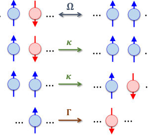
<figcaption class="paper-figure-caption"><b>Fig 1.</b> FIG. 1. Schematic illustration of the coagulation, branching, and self-destruction in one-dimensional hybrid contact process. In the quantum process, when a neighboring sites is occupied, the spin at each site undergoes coherent flipping between the occupied state (spin-up) and the empty state (spin-down) at a rate Ω. Correspond- ingly, in the classical process, the incoherent activation and deacti- vation occur at a rate κ. In addition, each spin undergoes incoherent decay to the empty state at a rate Γ.</figcaption>
</figure>
<figure class="paper-figure-card">
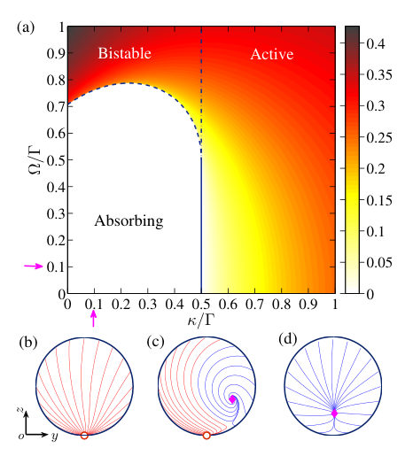
<figcaption class="paper-figure-caption"><b>Fig 2.</b> FIG. 2. (a) The mean-field steady-state phase diagram of HCP in the Ω−κ plane. The white region enclosed by the solid and dashed lines represents the absorbing phase with zero particle density, associated with the steady-state solution ⟨ˆσ⟩ss,0. The colored region to the right of the solid and dashed-dotted lines, characterized by κ/Γ = 1/2, represents the active phase with nonzero particle density and it is associated to the steady-state solution ⟨ˆσ⟩ss,+. The region enclosed by the dashed and dashed-dotted lines represents the bistable region, in which the system could evolve to either the absorbing or the active state in the long-time limit depending on the initial state. The color bar...</figcaption>
</figure>
<figure class="paper-figure-card">
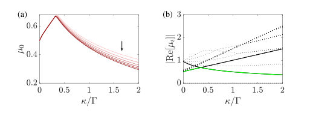
<figcaption class="paper-figure-caption"><b>Fig 3.</b> FIG. 4. (a) The Liouvillian gap of finite-size systems as a function of κ/Γ for Ω/Γ = 0.1, with the arrow indicating the change in the system size L from 7 to 12. (b) Displays the real part of the low- lying Liouvillian eigenvalues as a function of κ/Γ with L = 7 for Ω/Γ = 0.1. The two solid lines denote the (nearly) linear increasing branch and the monotonically decreasing branch, the minimum of which yields the Liouvillian gap, as highlighted in green.</figcaption>
</figure>
<figure class="paper-figure-card">
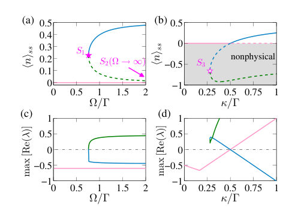
<figcaption class="paper-figure-caption"><b>Fig 4.</b> FIG. 3. The steady-state particle density ⟨ˆn⟩ss for κ/Γ = 0.1 (a) and Ω/Γ = 0.1 (b). The shaded region in gray denotes the nonphysical solutions. The solid lines denote the stable steady-state solution and the dashed lines denote the unstable ones. The two branches of ac- tive states, associated with the solution ⟨ˆσ⟩ss,±, emerges at S 1 and S 3. The former is a saddle-node point of the bifurcation (with the S 2 saddle node locating at infinite Ω), leading to a discontinuous phase transition in panel (a). The intersection of the absorbing and upper active branch at κ/Γ = 1/2 indicates a continuous phase transition in panel (b). The maximal real parts of the eigenvalues of the corre-...</figcaption>
</figure>
<figure class="paper-figure-card">
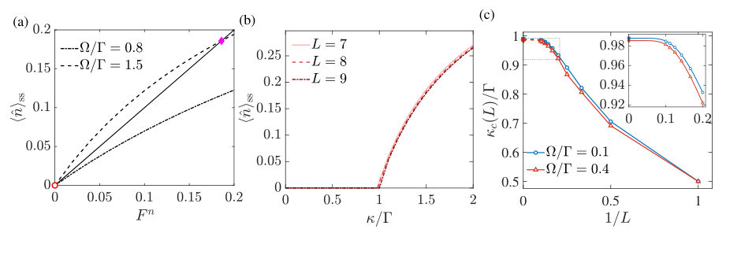
<figcaption class="paper-figure-caption"><b>Fig 5.</b> FIG. 5. (a) The ⟨ˆn⟩ss as a function of the effective field Fn for L = 7 and Ω/Γ = 0.1. The black solid line represents the self-consistency condition ⟨ˆn⟩ss = Fn. The dashed and dash-dotted curves show the ⟨ˆn⟩ss for κ/Γ = 1.5 and 0.8, respectively. Their intersection marks the self-consistent steady-state solution. The nonzero and zero solutions are indicated by the filled magenta diamond and the empty red circle, respectively. (b) The ⟨ˆn⟩ss as a function of κ/Γ for Ω/Γ = 0.1, with L = 7 , 8, and 9. (c) The CMF critical point κc(L)/Γ against the 1/L for Ω/Γ = 0.1 and 0.4. The inset provides an enlarged view of the region used for the exponential fits and thermodynamic limit extrapolation...</figcaption>
</figure>
</div>

<p><strong>Summary.</strong> The paper analyzes the phase transitions in a one-dimensional hybrid contact process by treating both coherent (quantum) and incoherent (classical) interactions. Using mean-field theory and advanced critical analysis methods like CAM, the authors map out the steady-state phase diagram and characterize the nature of the transition points, distinguishing between continuous and discontinuous regimes.</p>
<p><strong>Why it may be interesting.</strong> This work directly addresses non-equilibrium steady states and quantum phase transitions in open quantum systems, which is a major area of overlap between statistical mechanics and AMO physics.</p>
<details>
<summary>Detailed structure</summary>
<p><strong>Main problem.</strong> The study investigates the steady-state phase transition behavior of a one-dimensional hybrid contact process (HCP) when both quantum coherent and classical incoherent interactions are present.</p>
<p><strong>Main result.</strong> The system exhibits distinct transition types: a discontinuous transition via saddle-node bifurcation for varying $\Omega$, and a continuous transition characterized by specific critical exponents ($eta^*$) extracted using the Coherent Anomaly Method.</p>
<p><strong>Method.</strong> Theoretical analysis employing single-site and cluster mean-field approximations, stability analysis of the Liouvillian spectrum, and advanced techniques like the Coherent Anomaly Method (CAM) to extract true critical points and exponents.</p>
<p><strong>Model / system.</strong> The model is a one-dimensional HCP on a quantum spin-1/2 chain governed by a Lindblad master equation incorporating coherent ($\Omega$) and incoherent ($\kappa$) rates, alongside local decay ($\Gamma$).</p>
<p><strong>Key observables.</strong> Steady-state particle density $\langle\hat{n}
angle_{ss}$, the order parameter derived from site expectation values, and the coherent anomaly $n_0(L)$.</p>
<p><strong>Important parameters / regimes.</strong> The relative strengths of interaction rates ($\Omega/\Gamma$ and $\kappa/\Gamma$), system size ($L$), and the critical exponents ($eta^*$).</p>
<p><strong>Assumptions / limitations.</strong> The analysis relies on mean-field approximations (single-site MF, CMF) which assume factorization or local correlations; precise critical behavior requires taking thermodynamic limits.</p>
<p><strong>Figures summary.</strong> Figure 2 presents the steady-state phase diagram in the $\Omega-\kappa$ plane showing absorbing, active, and bistable regions. Figure 3 illustrates how varying parameters leads to different transition types (discontinuous vs. continuous).</p>
<p><strong>Paper structure.</strong> The paper first defines the model via the Lindblad equation and mean-field approach. It then analyzes the phase diagram using MF results, identifying bifurcation points. Finally, it employs CMF and CAM to rigorously characterize the critical exponents associated with the continuous transition.</p>
</details>
<details>
<summary>Abstract</summary>
<p>We investigate the steady-state phase transition in a one-dimensional hybrid contact process. We implement the single-site and cluster mean-field approximations based on the effective fields and present all the possible steady states of the system. We show the existence of the stable absorbing and active phases, and the bistable region in the long-time limit. The saddle-node bifurcation is observed at the boundary between the absorbing phase and the bistable region, suggesting a discontinuous phase transition. While the absorbing to active phase transition is continuous. To characterize the nonclassical scaling behavior of the continuous phase transition, we extract the true critical points and exponents by means of the coherent anomaly method.</p>
</details>
<p><sub><a href="#top">↑ back to top</a></sub></p>

<p><a id="paper-2608.10534"></a></p>
<h3 id="tunable-memory-effect-in-dissipative-strongly-correlated-quantum-systems"><a href="http://arxiv.org/abs/2608.10534v1">Tunable Memory Effect in Dissipative Strongly Correlated Quantum Systems</a></h3>
<p><strong>Authors:</strong> Haowei Li, Yu Chen, Hui Zhai<br>
<strong>Type:</strong> theory · <strong>Category:</strong> quantum gases · <strong>PDF:</strong> <a href="https://arxiv.org/pdf/2608.10534v1">https://arxiv.org/pdf/2608.10534v1</a><br>
<strong>Analysis basis:</strong> full PDF text, analyzed in chunks
<strong>Topic relevance:</strong> 🔥 <code>non-equilibrium universality</code> <strong>4/5</strong> · <code>Keldysh / 2PI / non-Gaussian methods</code> <strong>3/5</strong> · <code>analog quantum simulation</code> <strong>3/5</strong> · <code>correlated / nonlocal dissipation</code> <strong>3/5</strong> · <code>methods for driven-dissipative</code> <strong>3/5</strong> · <code>driven-dissipative phase transition</code> <strong>2/5</strong> · <code>quantum measurements</code> <strong>1/5</strong> · <code>scars &amp; prethermalization</code> <strong>1/5</strong></p>
<div class="figure-strip-hint">↔ Scroll figures horizontally</div>
<div class="paper-figures-scroll">
<figure class="paper-figure-card">
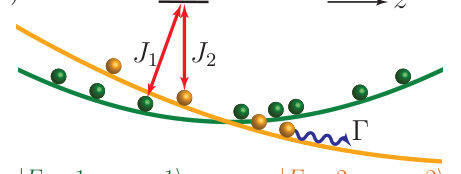
<figcaption class="paper-figure-caption"><b>Fig 1.</b> FIG. 1. (a) General setting. System A with strongly inter- acting particles is coupled to a subsystem B, which is further coupled to a Markovian bath E. (b) Atoms in two different hyperfine spin states, denoted by green and yellow balls, are coupled by a Raman coupling. They experience a balanced or tilted harmonic trap, respectively.</figcaption>
</figure>
<figure class="paper-figure-card">
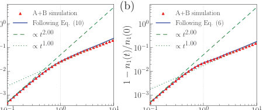
<figcaption class="paper-figure-caption"><b>Fig 2.</b> FIG. 2. Dissipation dynamics in a two-mode Bose system for (a) the total population N and (b) the mode population n1. Red triangles show full master-equation simulations for A+B, and blue solid lines show the response theory results from Eq. (10) in (a) and Eq. (6) in (b). Green dashed (dotted) lines denote the short-time (long-time) asymptotes from Eq. (13) in (a) and Eq. (18) in (b). Gray vertical dotted lines mark t = t0. Here N0 = 6, td/t0 = 20, hxt0 = 2, and hzt0 = 1.</figcaption>
</figure>
<figure class="paper-figure-card">
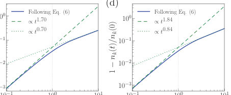
<figcaption class="paper-figure-caption"><b>Fig 3.</b> FIG. 3. Dissipation dynamics in a one-dimensional interact- ing Bose gas. (a), (b) Total population N; (c), (d) momen- tum occupation nk at vs|k|t0 = 1. The left (right) column corresponds to η = 0.85 (0.92). Blue solid lines show the response theory results: Eq. (10) in (a), (b); Eq. (6) in (c), (d). Green dashed (dotted) lines denote the short-time (long- time) asymptotes: Eq. (15) in (a), (b); Eq. (20) in (c), (d). Gray vertical dotted lines mark t = t0. Here td/t0 = 20 and ρ0vst0 = 10.</figcaption>
</figure>
</div>

<p><strong>Summary.</strong> This work develops a general theory to describe how observables evolve in strongly correlated quantum systems coupled to non-Markovian baths. It predicts that the initial time evolution is governed by a universal $t^{2\eta}$ scaling law, which then smoothly transitions into longer-time Markovian behavior. The framework is applicable to ultracold atomic gas simulations.</p>
<p><strong>Why it may be interesting.</strong> The universal prediction of the $t^{2\eta}$ scaling law for short-time dynamics, independent of microscopic details, provides a powerful diagnostic tool for characterizing memory effects in strongly correlated quantum gases.</p>
<details>
<summary>Detailed structure</summary>
<p><strong>Main problem.</strong> The study addresses how strongly correlated quantum many-body systems behave when subjected to non-Markovian dissipation, capturing the interplay between strong correlations and memory effects.</p>
<p><strong>Main result.</strong> The short-time dynamics of a system observable in a critical state universally follows a $t^{2\eta}$ scaling law, which then crosses over to either $t^{2\eta-1}$ or linear-in-$t$ behavior at longer times.</p>
<p><strong>Method.</strong> The authors develop a general theoretical framework using linear response theory and perturbative expansions in the coupling strength ($J$) to calculate observable changes ($\delta W(t)$).</p>
<p><strong>Model / system.</strong> The analysis uses general models of strongly interacting particles coupled to an environment, with specific examples including two-mode Bose systems and one-dimensional interacting Bose gases (Lieb–Liniger Hamiltonian).</p>
<p><strong>Key observables.</strong> Change in observable ($\delta W(t)$), total atom number ($\hat{N}$), momentum occupation ($\hat{n}_k$), and spectral densities ($S^{(1)}, S^{(2)}$).</p>
<p><strong>Important parameters / regimes.</strong> Critical exponent $\eta$, memory time $t_0 = 1/\Gamma$, dissipation time $t_d$, and the coupling strength $J$.</p>
<p><strong>Assumptions / limitations.</strong> The theory relies on perturbative expansions, a factorized two-frequency spectral density approximation, and assuming applicability of edge power laws over low-energy frequency windows.</p>
<p><strong>Figures summary.</strong> Figures compare full master equation simulations against response theory predictions for conserved and nonconserved observables in Bose systems, illustrating the crossover from short-time quadratic/power-law growth to linear-in-$t$ behavior.</p>
<p><strong>Paper structure.</strong> The paper establishes a general theoretical framework for dissipation response, derives scaling laws for both conserved and nonconserved observables across different time regimes ($t \ll t_0$, $t_0 \ll t \ll t_d$), and applies these results to specific quantum gas models.</p>
</details>
<details>
<summary>Abstract</summary>
<p>Strongly interacting quantum many-body systems subjected to non-Markovian dissipation pose a formidable challenge due to the interplay between strong correlation effects and memory effects. In this Letter, we develop a general theoretical framework to compute how a system observable responds to dissipation, which captures memory effects at short times and recovers the Markovian limit at longer times. Using this framework, we predict that, for a strongly correlated quantum critical state with critical exponent $η$, the short-time dynamics of a system observable always obeys a $t^{2η}$ scaling law. This emerges as a universal result from the interplay between strong correlation and memory effects, independent of the microscopic Hamiltonian of the system. We further reveal a crossover behavior of this scaling law to either $t^{2η-1}$ or linear-in-$t$ behavior beyond the memory time scale. We propose a concrete physical realization of a non-Markovian bath with tunable memory time using ultracold atoms, where our predictions can be straightforwardly verified in current experiments.</p>
</details>
<p><sub><a href="#top">↑ back to top</a></sub></p>

<p><a id="paper-2608.10536"></a></p>
<h3 id="anomalous-current-fluctuations-in-the-stochastic-xnor-hopping-model"><a href="http://arxiv.org/abs/2608.10536v1">Anomalous current fluctuations in the stochastic XNOR hopping model</a></h3>
<p><strong>Authors:</strong> Balázs Pozsgay<br>
<strong>Type:</strong> theory · <strong>Category:</strong> statistical mechanics · <strong>PDF:</strong> <a href="https://arxiv.org/pdf/2608.10536v1">https://arxiv.org/pdf/2608.10536v1</a><br>
<strong>Analysis basis:</strong> full PDF text, analyzed in chunks
<strong>Topic relevance:</strong> 🔥 <code>Full counting statistics</code> <strong>4/5</strong> · 🔥 <code>scars &amp; prethermalization</code> <strong>4/5</strong> · <code>methods for driven-dissipative</code> <strong>3/5</strong> · <code>non-equilibrium universality</code> <strong>3/5</strong> · <code>driven-dissipative phase transition</code> <strong>2/5</strong> · <code>analog quantum simulation</code> <strong>1/5</strong> · <code>correlated / nonlocal dissipation</code> <strong>1/5</strong> · <code>quantum measurements</code> <strong>1/5</strong></p>
<div class="figure-strip-hint">↔ Scroll figures horizontally</div>
<div class="paper-figures-scroll">
<figure class="paper-figure-card">
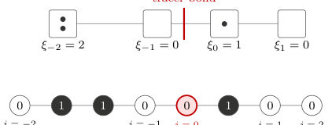
<figcaption class="paper-figure-caption"><b>Fig 1.</b> Figure 1: The exact coordinate transformations for one example initial configuration. A bond variable is zero when its two neighbouring spins are equal. The zero bonds are labelled consecutively by the variable i. The zero-range occupation ξi counts the complete 11 pairs between zero labels i and i + 1. The parity information—whether an unpaired 1 remains in a gap—is stored separately in εi ∈{1, 2}. The squeezed SSEP contains ξi particles between the corresponding labelled holes. Red follows the same tracer through all four rows: the marked equal-spin pair, its zero bond, the bond between the adjacent zero-range sites, and the corresponding labelled SSEP hole.</figcaption>
</figure>
<figure class="paper-figure-card">
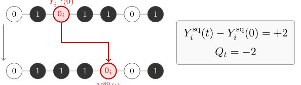
<figcaption class="paper-figure-caption"><b>Fig 2.</b> Figure 2: Definition of the auxiliary tracer current in the squeezed SSEP. The red hole carries the fixed label i and is followed throughout the evolution. Its position at time t is Y sq i (t), and Qt is defined as minus its net displacement. In the example shown, the tagged hole moves two sites to the right, so its displacement is +2 and Qt = −2.</figcaption>
</figure>
<figure class="paper-figure-card">

<figcaption class="paper-figure-caption"><b>Fig 3.</b> Figure 3: Distribution of Jhom(t)/t1/4 for the homogeneous biased state at m = 0.7, using L = 512 and 20,000 trajectories. Histograms are the Monte Carlo data and the solid curve is the centred Gaussian density of variance σ2 0.7 predicted by Conjecture 3.1; no parameter is fitted.</figcaption>
</figure>
<figure class="paper-figure-card">
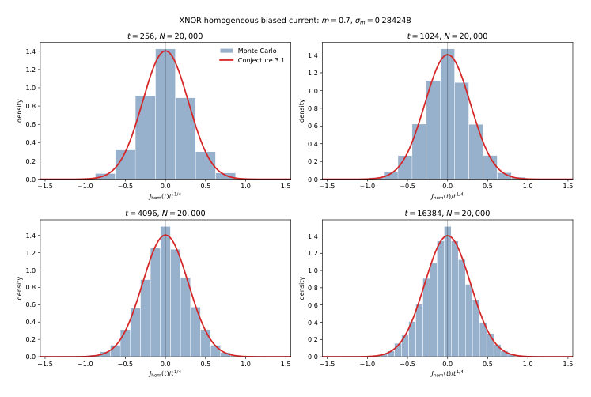
<figcaption class="paper-figure-caption"><b>Fig 4.</b> Figure 3 shows the four-time density comparison for the m = 0.7 main ensemble. The narrowing lattice spacing and the approach to the unfitted Gaussian curve are both visible. The second- and fourth-moment ratios over all four times are shown in Figure 4, where residual drift remains visible in the scaled amplitudes. We also performed an independent longer diagnostic at m = 0.7, with L = 1024, 5,000 trajectories, and final time t = 65536. It gives</figcaption>
</figure>
<figure class="paper-figure-card">
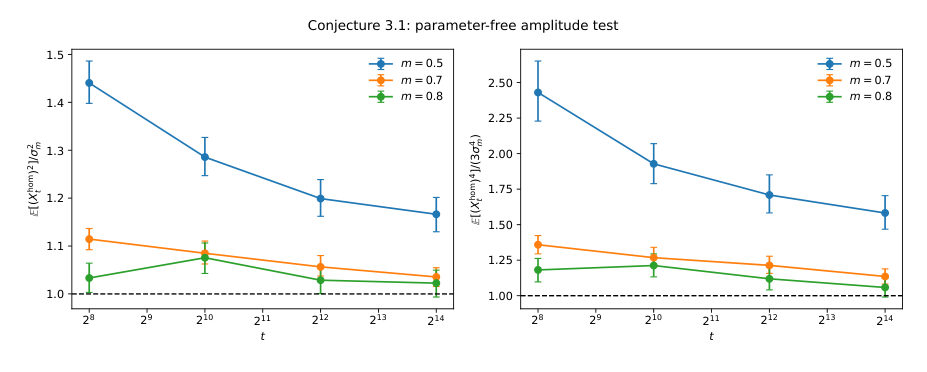
<figcaption class="paper-figure-caption"><b>Fig 5.</b> Figure 4: Second- and fourth-moment tests for the homogeneous biased problem. The panels show E[(Xhom t )2]/σ2 m and E[(Xhom t )4]/(3σ4 m). Error bars are 95% uncertainty intervals obtained by trajectory resampling; the dashed lines are the predictions of Conjecture 3.1.</figcaption>
</figure>
</div>

<p><strong>Summary.</strong> This paper analyzes anomalous current fluctuations in the stochastic XNOR hopping model by formulating three conjectures describing the long-time limiting distributions of the integrated spin current. Using numerical simulations, the authors provide strong evidence supporting these predictions—Gaussian, half-normal, and M-Wright limits—for different initial magnetization regimes.</p>
<p><strong>Why it may be interesting.</strong> It provides concrete, non-trivial scaling laws for current fluctuations in a specific interacting quantum/classical spin model, which is highly relevant for understanding transport in low-dimensional quantum systems.</p>
<details>
<summary>Detailed structure</summary>
<p><strong>Main problem.</strong> The paper investigates anomalous current fluctuations (Fixed-Cut Current Statistics) in one-dimensional many-body systems, specifically focusing on the stochastic XNOR hopping model.</p>
<p><strong>Main result.</strong> Three distinct conjectures are proposed for the long-time scaling limits of the integrated spin current depending on the initial state: Gaussian ($t^{1/4}$), half-normal ($t^{1/4}$), and M-Wright ($t^{1/8}$) distributions.</p>
<p><strong>Method.</strong> The analysis involves formulating theoretical conjectures based on microscopic dynamics, followed by numerical simulations to provide evidence for these predicted scaling laws and amplitudes.</p>
<p><strong>Model / system.</strong> The system is the stochastic XNOR process, a kinetically constrained hopping model defined on a 1D chain of spins ($\eta_j$). The dynamics are governed by local exchange rules involving four-site blocks.</p>
<p><strong>Key observables.</strong> The integrated spin current $J(t)$ through a fixed bond, and its rescaled moments $\mathbb{E}[(J(t)/t^\alpha)^r]$.</p>
<p><strong>Important parameters / regimes.</strong> Initial magnetization ($m$), time scaling exponents ($\alpha = 1/4$ or $1/8$), and the specific initial state (homogeneous vs. domain-wall).</p>
<p><strong>Assumptions / limitations.</strong> The analysis relies on conjectures for the limiting probability distributions, and numerical support is provided by simulations; a separate companion paper contains an unverified candidate proof.</p>
<p><strong>Figures summary.</strong> Figures compare Monte Carlo density histograms of the rescaled current against the predicted M-Wright density, showing agreement at large times and larger system volumes ($L=512, L=1024$).</p>
<p><strong>Paper structure.</strong> The paper introduces the problem (Section 3), details analytic strategies by mapping to simpler processes (Section 4), and concludes with numerical tests supporting the conjectures (Section 5).</p>
</details>
<details>
<summary>Abstract</summary>
<p>We consider fluctuations of the spin current in the stochastic XNOR process, a kinetically constrained hopping model in one spatial dimension. We formulate three conjectures with explicit amplitudes for the long-time current distributions: a Gaussian limit on the $t^{1/4}$ scale for homogeneous initial states with nonzero magnetization, a half-normal limit on the $t^{1/4}$ scale for domain-wall states with opposite magnetizations, and an M-Wright limit on the $t^{1/8}$ scale for homogeneous initial states at zero magnetization. Earlier work identified the tracer mechanism and anticipated the scaling exponents and limiting shapes in the domain-wall and zero-magnetization settings. Starting from the microscopic XNOR dynamics, we predict the missing amplitudes for the continuous-time process and extend the picture to homogeneous biased initial data. Simulations provide numerical support for all three conjectures without fitted parameters. A separate mathematical companion paper presents an extensively AI-generated candidate proof. Generative-AI tools were used in the research and writing workflow.</p>
</details>
<p><sub><a href="#top">↑ back to top</a></sub></p>

<p><a id="paper-2608.10604"></a></p>
<h3 id="generating-gkp-states-using-quantum-dots-inside-a-strongly-coupled-cavity"><a href="http://arxiv.org/abs/2608.10604v1">Generating GKP states using quantum dots inside a strongly coupled cavity</a></h3>
<p><strong>Authors:</strong> Viswatma Kamath, Ravi Mehta, Biman Chattopadhyay, Sandeep K Goyal<br>
<strong>Type:</strong> theory · <strong>Category:</strong> quantum information and computing · <strong>PDF:</strong> <a href="https://arxiv.org/pdf/2608.10604v1">https://arxiv.org/pdf/2608.10604v1</a><br>
<strong>Analysis basis:</strong> full PDF text, analyzed in chunks
<strong>Topic relevance:</strong> 🔥 <code>quantum optics experiment</code> <strong>4/5</strong> · <code>analog quantum simulation</code> <strong>3/5</strong> · <code>quantum measurements</code> <strong>3/5</strong> · <code>QC/QI experiment</code> <strong>2/5</strong> · <code>driven-dissipative phase transition</code> <strong>2/5</strong> · <code>methods for driven-dissipative</code> <strong>2/5</strong> · <code>Keldysh / 2PI / non-Gaussian methods</code> <strong>1/5</strong> · <code>Tavis-Cummings &amp; cavity-many-emitter</code> <strong>1/5</strong> · <code>correlated / nonlocal dissipation</code> <strong>1/5</strong></p>
<div class="figure-strip-hint">↔ Scroll figures horizontally</div>
<div class="paper-figures-scroll">
<figure class="paper-figure-card">
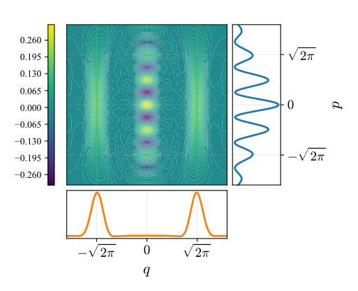
<figcaption class="paper-figure-caption"><b>Fig 1.</b> FIG. 1: Wigner distribution of |SC±(α, ξ)⟩, along with the ˆq and ˆp marginals. Here α = √π is chosen as the optimal displacement amplitude for the two-round cat- breeding protocol (see Section V A), while the squeezing ξ = 0.98 (r = 0.98, corresponding to ≈8.5 dB) is selected to illustrate a representative ideal squeezed cat state. The justification for these values chosen for our proto- col are given in Sec V. In the position quadrature, the Wigner function exhibits two well-separated Gaussian lobes, while the momentum marginal carries pronounced interference fringes that reflect the quantum coherence between the two components. The Wigner distribution takes negative values at certain...</figcaption>
</figure>
<figure class="paper-figure-card">
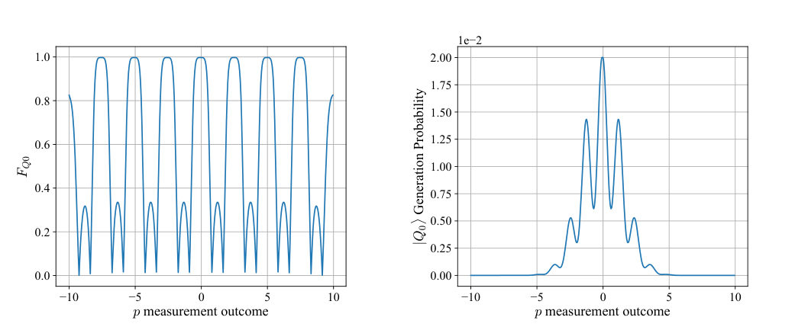
<figcaption class="paper-figure-caption"><b>Fig 2.</b> FIG. 3: Subfig. 3a shows p outcome vs. fidelity FQ0(p) for a single round of cat breeding. The periodic high-fidelity windows can be used to relax measurement post-selection conditions, substantially enhancing the success rate of the desired state. Subfig. 3b shows the probability of |Q0⟩generation for the corresponding p outcome.</figcaption>
</figure>
<figure class="paper-figure-card">
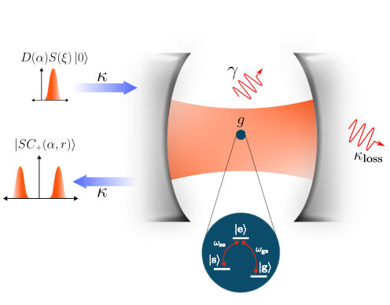
<figcaption class="paper-figure-caption"><b>Fig 3.</b> FIG. 4: Generating cat states using cavity QED: A quan- tum dot with ground states |g⟩and |s⟩is embedded in a strongly coupled optical cavity. Only the |s⟩↔|e⟩transi- tion is resonant with the cavity mode; the |g⟩↔|e⟩tran- sition remains dark. The spin is initialized in an equal superposition (|g⟩+ |s⟩)/ √</figcaption>
</figure>
<figure class="paper-figure-card">
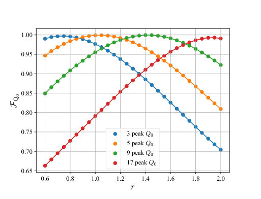
<figcaption class="paper-figure-caption"><b>Fig 4.</b> FIG. 5: Fidelity of the generated |Q0⟩state as a function of the input squeezing parameter r for different numbers of cat-breeding rounds. Increasing the number of breed- ing rounds relaxes the squeezing requirement for achiev- ing a given target fidelity.</figcaption>
</figure>
<figure class="paper-figure-card">
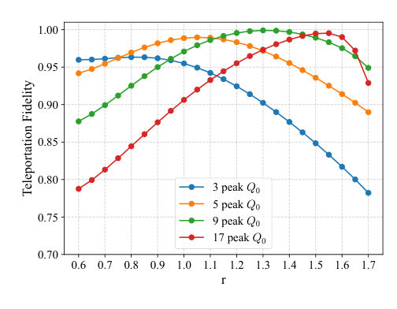
<figcaption class="paper-figure-caption"><b>Fig 5.</b> FIG. 6: Teleportation fidelity using the generated |Q0⟩ states as a function of input squeezing r for different cat-breeding depths. Improved squeezing and additional breeding rounds enhance the teleportation performance, approaching the fault-tolerant threshold for GKP-based protocols.</figcaption>
</figure>
</div>

<p><strong>Summary.</strong> This work presents a practical and scalable method to generate resource states required for CV quantum computation by utilizing quantum dots in an optical cavity. The protocol generates finite-energy qunaught states through cat-breeding, overcoming the limitations of previous methods that suffered from low success rates due to strict measurement post-selection. This approach is highly relevant as it integrates solid-state physics with advanced photonic quantum information processing.</p>
<p><strong>Why it may be interesting.</strong> It provides a concrete, chip-compatible roadmap for generating non-Gaussian resources essential for fault tolerance, bridging fundamental cavity QED physics (QD interaction) directly into quantum information processing protocols.</p>
<details>
<summary>Detailed structure</summary>
<p><strong>Main problem.</strong> The primary challenge is generating fault-tolerant Continuous Variable (CV) quantum computation resources, specifically GKP states, because their ideal form possesses unphysical infinite energy.</p>
<p><strong>Main result.</strong> The authors propose a scalable protocol using quantum dots in a cavity to generate finite-energy qunaught states via cat-breeding, significantly improving success rates by relaxing strict post-selection criteria.</p>
<p><strong>Method.</strong> The scheme combines deterministic squeezed cat-state generation from the QD-cavity system with multi-round cat-breeding protocols and homodyne measurements.</p>
<p><strong>Model / system.</strong> The physical platform is a strongly coupled quantum dot embedded in an optical cavity (Cavity-QED). The dynamics are modeled using cascaded-systems formalism to account for finite pulse durations and mode selectivity.</p>
<p><strong>Key observables.</strong> Fidelity of the generated state, generation probability/success rate, Wigner distribution (showing negative values), and temporal correlation functions ($g^{(1)}$).</p>
<p><strong>Important parameters / regimes.</strong> Squeezing parameter ($r$), cavity loss ($\kappa$), finite pulse duration, and the structured set of homodyne measurement outcomes.</p>
<p><strong>Assumptions / limitations.</strong> The ideal GKP states are unphysical, necessitating the use of finite-energy approximations like the qunaught state. The protocol assumes compatibility with integrated photonics and telecom wavelengths.</p>
<p><strong>Figures summary.</strong> Figures illustrate the Wigner distribution of cat states, the three-cavity setup for simulation, and fidelity oscillations due to ground-state precession in non-degenerate systems.</p>
<p><strong>Paper structure.</strong> The paper reviews the state-of-the-art (comparing microwave vs. optical), details the cat-breeding protocol, formalizes the light-matter interaction Hamiltonian for the QD-cavity system, presents numerical simulations analyzing fidelity trade-offs, and concludes with a comparison to other GKP architectures.</p>
</details>
<details>
<summary>Abstract</summary>
<p>GKP states enable fault-tolerant CV quantum computation, but their generation remains experimentally challenging due to their highly non-Gaussian and infinite-energy ideal structure. In this work, we present a realistic and scalable protocol for generating finite-energy resource states, specifically the qunaught state, using Schrodinger cat states generated in a strongly coupled quantum dot-cavity system. Our scheme combines deterministic squeezed cat-state generation, cat-breeding protocols, and homodyne measurements. Using numerical simulations, we analyze the role of various parameters of the quantum dot-cavity system in the generation of practical qunaught states. Furthermore, we quantify the trade-off between the fidelity and generation probability of these states and exploit the fact that accepting a structured set of homodyne outcomes can significantly enhance the overall success rate. The proposed approach is compatible with integrated photonics and telecom wavelengths, offering a promising route toward scalable CV quantum information processing.</p>
</details>
<p><sub><a href="#top">↑ back to top</a></sub></p>

<p><a id="paper-2608.11168"></a></p>
<h3 id="impact-of-strain-and-dark-states-on-spectroscopic-measurements-of-silicon-vacancy-centers-in-diamond"><a href="http://arxiv.org/abs/2608.11168v1">Impact of strain and dark states on spectroscopic measurements of silicon-vacancy centers in diamond</a></h3>
<p><strong>Authors:</strong> Tommy Chin, Kesav V. Narayan, Imran Bashir, Kelsey M. Bates, Liam G. Stanton, Ehsan Khatami, Christopher L. Smallwood<br>
<strong>Type:</strong> theory · <strong>Category:</strong> other · <strong>PDF:</strong> <a href="https://arxiv.org/pdf/2608.11168v1">https://arxiv.org/pdf/2608.11168v1</a><br>
<strong>Analysis basis:</strong> full PDF text, analyzed in chunks
<strong>Topic relevance:</strong> 🔥 <code>methods for driven-dissipative</code> <strong>4/5</strong> · <code>correlated / nonlocal dissipation</code> <strong>3/5</strong> · <code>quantum measurements</code> <strong>3/5</strong> · <code>Keldysh / 2PI / non-Gaussian methods</code> <strong>2/5</strong> · <code>driven-dissipative phase transition</code> <strong>2/5</strong> · <code>quantum optics experiment</code> <strong>2/5</strong> · <code>QC/QI experiment</code> <strong>1/5</strong> · <code>interference shaping light</code> <strong>1/5</strong> · <code>non-equilibrium universality</code> <strong>1/5</strong></p>
<div class="figure-strip-hint">↔ Scroll figures horizontally</div>
<div class="paper-figures-scroll">
<figure class="paper-figure-card">
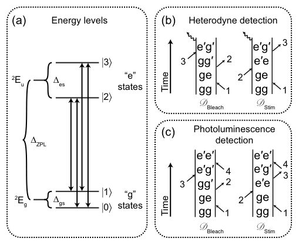
<figcaption class="paper-figure-caption"><b>Fig 1.</b> FIG. 2. (a) Energy level structure for the SiV– center system in diamond. (b) Rephasing double-sided Feynman diagrams for heterodyne detection. (c) Rephasing double- sided Feynman diagrams for photoluminescence detection.</figcaption>
</figure>
<figure class="paper-figure-card">
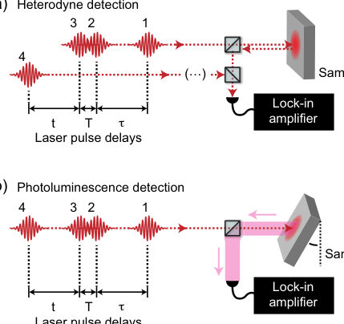
<figcaption class="paper-figure-caption"><b>Fig 2.</b> FIG. 1. Schematic illustration of MDCS measurements of SiV– centers in diamond as reported in Ref. [19]. A series of time-delayed laser pulses excites the sample, producing a four-wave mixing response that can be read out as coherent emission of light or as an incoherent photoluminescence beatnote. (a) Heterodyne detection scheme for measuring coherent emission. (b) Photoluminescence detection scheme.</figcaption>
</figure>
<figure class="paper-figure-card">
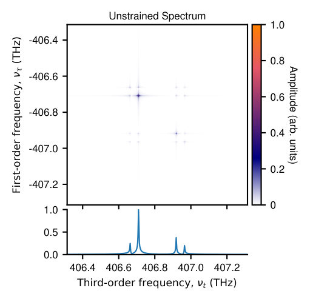
<figcaption class="paper-figure-caption"><b>Fig 3.</b> FIG. 3. Unstrained SiV– rephasing spectrum. The 16 Lorentzian peaks arise from all permutations of ground- and excited-state indices, with amplitudes taken from Ref. [19]. The lower panel shows the projection onto νt.</figcaption>
</figure>
<figure class="paper-figure-card">
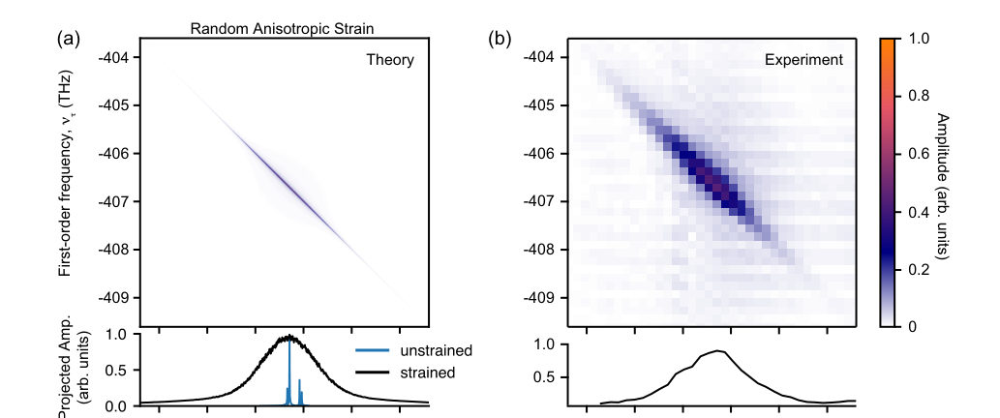
<figcaption class="paper-figure-caption"><b>Fig 4.</b> FIG. 4. Comparison between theory and experiment for strained heterodyne-detected MDCS measurements of SiV– centers in diamond. (a) Simulated spectrum under circumstances of fully random anisotropic strain, with parameters as specified in the main text. The upper panel shows the two-dimensional amplitude |Stot(νt, ντ)|. The lower panel shows the projection of this amplitude onto the νt axis (black trace). The projection of the unstrained spectrum amplitude (blue trace) from Fig. 3 is also shown for comparison. (b) Experimental dataset for heterodyne-detected MDCS measurements of SiV– centers in diamond as reported in Ref. [19].</figcaption>
</figure>
<figure class="paper-figure-card">
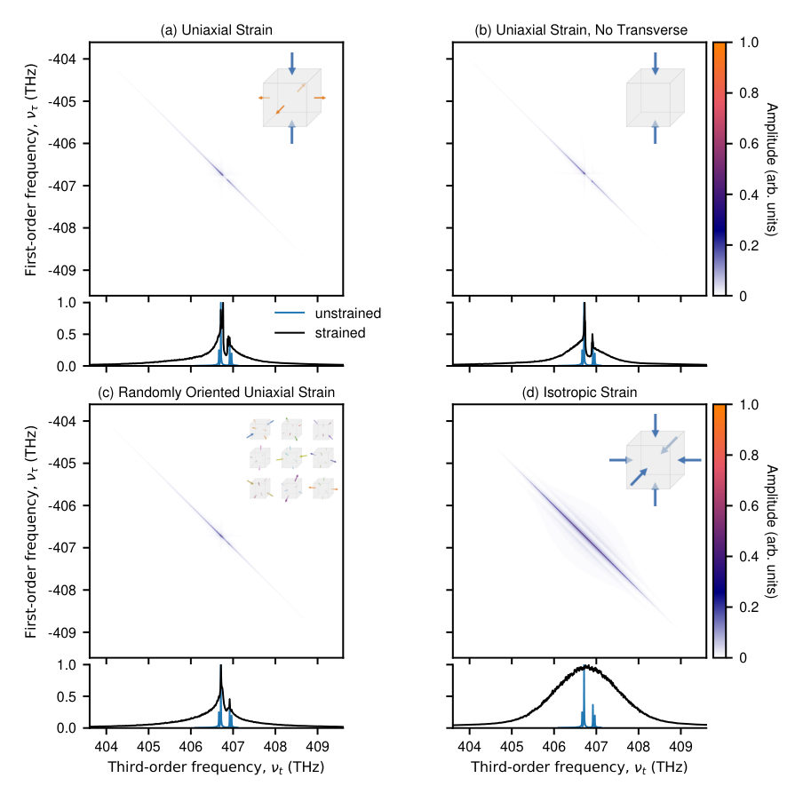
<figcaption class="paper-figure-caption"><b>Fig 5.</b> FIG. 5. Heterodyne-detected MDCS spectra for four alternative strain models. Each panel shows the two-dimensional amplitude spectrum above and its projection onto the νt axis below, with the unstrained reference overlaid in blue. (a) Uniaxial strain. (b) Uniaxial strain without transverse response, p = 0. (c) Randomly oriented uniaxial strain. (d) Isotropic strain. The cube schematic in the upper right corner of each panel illustrates the corresponding strain, with arrows indicating the strain directions. In (c), several cubes at different orientations represent the orientational average. The arrows in panels (a), (b), and (d) depict the compressive sign only and do not represent the...</figcaption>
</figure>
</div>

<p><strong>Summary.</strong> This paper models the spectroscopic response of SiV- centers in diamond under strain using MDCS theory. By simulating measurements under different detection schemes (heterodyne vs. PL), the authors determined that random anisotropic strain best describes spectral broadening. The comparison between techniques successfully separates radiative from nonradiative decay pathways, providing critical insights for quantum sensing applications.</p>
<p><strong>Why it may be interesting.</strong> This work directly addresses open quantum system dynamics in solid-state emitters, using advanced spectroscopy to map out environmental coupling (strain) and identify non-radiative loss channels, which is central to building reliable quantum memories and sensors.</p>
<details>
<summary>Detailed structure</summary>
<p><strong>Main problem.</strong> The study aims to understand how strain variations and dark states affect the spectroscopic measurements of silicon-vacancy (SiV-) centers in diamond when using advanced techniques like optical multidimensional coherent spectroscopy (MDCS).</p>
<p><strong>Main result.</strong> Fully random anisotropic strain best reproduces the measured spectral broadening, yielding characteristic axial and shear strain values. Furthermore, comparing heterodyne vs. photoluminescence detection separates radiative from nonradiative dynamics.</p>
<p><strong>Method.</strong> The authors developed a computational model using density-matrix perturbation theory within a Bloch-model framework, employing Monte Carlo sampling to average over random strain configurations.</p>
<p><strong>Model / system.</strong> The physical system is the negatively charged SiV- center in diamond. The model simulates MDCS signals by calculating spectral pole positions ($    ilde{\Omega}_{ab}$) that depend explicitly on six components of the local strain tensor ($\epsilon$).</p>
<p><strong>Key observables.</strong> Two-dimensional amplitude spectra $|   ext{Stot}(
u_t, 
u_  au)|$, spectral inhomogeneity, and the ratio between heterodyne and photoluminescence signals.</p>
<p><strong>Important parameters / regimes.</strong> Axial strain variation ($2.8 	imes 10^{-4}$), shear strain variation ($3.5 	imes 10^{-5}$), and the nonradiative decay rate ($\Gamma_{	ext{nr}}$) relative to radiative rates.</p>
<p><strong>Assumptions / limitations.</strong> The analysis uses approximations like the impulsive limit and Markovian limit; a major limitation is that reproducing PL spectra requires an extremely high, potentially unphysical, ratio of nonradiative to radiative rates.</p>
<p><strong>Figures summary.</strong> Figures illustrate the MDCS setup for both detection schemes (heterodyne vs. PL), the four-level energy structure of SiV-, and comparisons showing how fully random anisotropic strain best fits measured spectral lineshapes compared to structured strain models.</p>
<p><strong>Paper structure.</strong> The paper progresses by first establishing the theoretical framework using density matrix theory, then applying Monte Carlo sampling to model ensemble averaging over strain distributions, and finally comparing the predictions from different detection schemes (heterodyne vs. PL) to constrain physical parameters like strain magnitude and decay pathways.</p>
</details>
<details>
<summary>Abstract</summary>
<p>Negatively charged silicon-vacancy (SiV$^-$) centers in diamond offer an attractive platform for the development of many forms of quantum technology. However, questions remain in connection to how large ensembles of SiV$^-$ centers behave in concert. Here, we develop a computational model designed to simulate recent experiments where optical multidimensional coherent spectroscopy (MDCS) was used to examine a high-concentration sample of SiV$^-$ centers in diamond, revealing significant variations in spectral signature depending on the detection scheme. Simulation results reveal that strain effects are highly random in this system, with a characteristic axial strain of $2.8 \times 10^{-4}$ and a shear strain of $3.5 \times 10^{-5}$. They suggest in addition that highly strained centers (with values exceeding $1.5 \times 10^{-5}$) may become significantly decoupled from optical emission. The results have implications for the use of SiV$^-$ centers as quantum sensors.</p>
</details>
<p><sub><a href="#top">↑ back to top</a></sub></p>

<p><a id="paper-2608.10556"></a></p>
<h3 id="topological-states-of-generalized-dissipative-majorana-wires"><a href="http://arxiv.org/abs/2608.10556v1">Topological states of generalized dissipative Majorana wires</a></h3>
<p><strong>Authors:</strong> Farokhnaz Hosseinifar, Ali G. Moghaddam<br>
<strong>Type:</strong> theory · <strong>Category:</strong> other · <strong>PDF:</strong> <a href="https://arxiv.org/pdf/2608.10556v1">https://arxiv.org/pdf/2608.10556v1</a><br>
<strong>Analysis basis:</strong> full PDF text, analyzed in chunks
<strong>Topic relevance:</strong> 🔥 <code>driven-dissipative phase transition</code> <strong>4/5</strong> · 🔥 <code>methods for driven-dissipative</code> <strong>4/5</strong> · <code>Keldysh / 2PI / non-Gaussian methods</code> <strong>3/5</strong> · <code>correlated / nonlocal dissipation</code> <strong>3/5</strong> · <code>analog quantum simulation</code> <strong>2/5</strong> · <code>non-equilibrium universality</code> <strong>2/5</strong> · <code>quantum measurements</code> <strong>1/5</strong></p>
<div class="figure-strip-hint">↔ Scroll figures horizontally</div>
<div class="paper-figures-scroll">
<figure class="paper-figure-card">
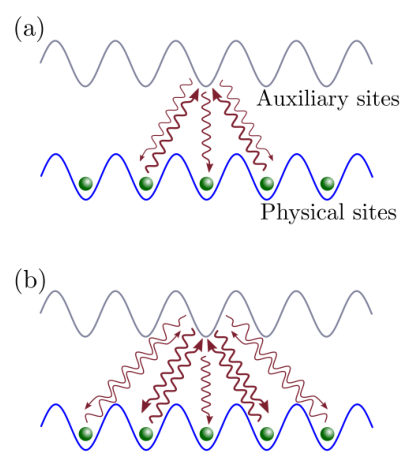
<figcaption class="paper-figure-caption"><b>Fig 1.</b> FIG. 1. 1D cold atom chain in an optical lattice. The phys- ical sites in the lower parts of each panel are coherently cou- pled to the auxiliary sites driven by external lasers. There is also dissipation via spontaneous emission, which brings the states back to the lower sites. Driving and dissipation are rep- resented by curvy arrows inclined upwards and downwards, respectively. (a) Imbalanced coupling model with nearest- neighbor (n.n.) sites involved. Coherent driving couples atoms at each pair of n.n.n. sites to the auxiliary state corre- sponding to the site between them. The relaxation the from auxiliary state though takes place towards the corresponding physical site and its nearest...</figcaption>
</figure>
<figure class="paper-figure-card">
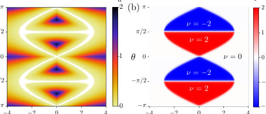
<figcaption class="paper-figure-caption"><b>Fig 2.</b> FIG. 2. (a) Dissipative (damping) gap of the Kitaev model with imbalanced coupling as a function of the imbalance con- trol parameter θ and the onsite dissipation parameter κ. (b) The topological winding number variation with the two pa- rameters θ and κ. As the model has always a nonvanishing purity gap, the change in the winding number exactly coin- cides with the dissipative gap closing lines. The switching between ν = ±2 has been made possible by the imbalanced coupling controlled by θ.</figcaption>
</figure>
<figure class="paper-figure-card">
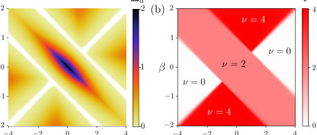
<figcaption class="paper-figure-caption"><b>Fig 3.</b> FIG. 3. (a) Dissipative (damping) gap and (b) the topolog- ical winding number of the Kitaev model, including n.n.n. coupling, as functions of the onsite dissipation parameter κ and the relative strength of n.n.n. coupling represented as β. Again and similar to the model with only n.n. coupling, the change in the winding number exactly coincides with the dissipative gap closing lines. For a large enough n.n.n. cou- pling (|β| &gt; 0.5), we can achieve a higher value of topological invariant, which is ν = 4 for this model.</figcaption>
</figure>
</div>

<p><strong>Summary.</strong> This paper analyzes the topology of generalized dissipative Majorana wires using a Lindblad master equation framework. By calculating spectral gaps and defining a winding number invariant, the authors show that this topology persists even with damping. They demonstrate that engineering couplings allows control over the topological state, achieving higher bound states than simpler models.</p>
<p><strong>Why it may be interesting.</strong> This work bridges non-equilibrium quantum dynamics (Lindblad equations) with topological concepts typically associated with Hermitian Hamiltonians. The ability to define robust topological invariants in the presence of dissipation is highly relevant for understanding open quantum systems.</p>
<details>
<summary>Detailed structure</summary>
<p><strong>Main problem.</strong> The study investigates topological states within generalized one-dimensional (1D) quantum dissipative models, specifically those modeling Majorana wires that can host multiple bound states.</p>
<p><strong>Main result.</strong> The authors demonstrate that a winding number serves as a robust topological invariant distinguishing steady states even when damping and purity gaps are present. Furthermore, incorporating next-nearest-neighbor couplings allows for achieving higher winding numbers.</p>
<p><strong>Method.</strong> The analysis utilizes the adjoint Lindblad equation applied to fermionic two-point correlations, calculating spectral gaps (damping and purity) and defining topology via a symmetry-based winding number calculation.</p>
<p><strong>Model / system.</strong> The system is modeled as a 1D fermionic open quantum system whose dynamics are governed by a quadratic Lindblad equation. The model generalizes the Kitaev chain by including imbalanced couplings and next-nearest-neighbor interactions.</p>
<p><strong>Key observables.</strong> Damping gap, purity gap, and the topological winding number ($
u_{1D}$).</p>
<p><strong>Important parameters / regimes.</strong> Coupling strengths ($\kappa, 	heta, eta$), which control the closing/opening of the dissipative gap.</p>
<p><strong>Assumptions / limitations.</strong> The analysis relies on transforming to a mean-field description using phase-conserving linear operators and analyzing steady states derived from fermionic correlations rather than direct Majorana operator evolution.</p>
<p><strong>Figures summary.</strong> Figures illustrate the dependence of the dissipative gap ($\Delta_d$) and the topological winding number ($
u$) on coupling parameters, showing that changes in $
u$ coincide with the closing of $\Delta_d$.</p>
<p><strong>Paper structure.</strong> The paper progresses by establishing the mathematical framework using Lindblad dynamics for fermionic correlations, deriving the topological invariant (winding number), and then applying this analysis to specific generalized models (Model I and Model II) to map out their phase diagrams.</p>
</details>
<details>
<summary>Abstract</summary>
<p>We study the generalized one-dimensional (1D) quantum dissipative models corresponding to a Majorana wire which can possess more than one Majorana bound state at each end. The system consists of a 1D fermionic open quantum system whose dynamics is governed by a quadratic Lindblad equation. Using the adjoint Lindblad equation for the fermionic two-point correlations, we find the gaps in the damping and purity spectra of a generic 1D model. Then, using the symmetry-based classification, we show that a winding number as the topological invariant can be defined which distinguishes different steady states of the system in the presence of damping and purity gaps. Then we focus on certain models with different Lindblad quantum jump terms and explore their phase diagrams by calculating the damping and the purity gaps as well as the winding number. In particular, we show that by inclusion of quantum jumps between next-nearest-neighbor sites, higher winding numbers and, equivalently, more Majorana bound states can be achieved. Also, by introducing imbalanced couplings, we can switch between states with negative and positive winding numbers. Finally, we should mention that since our formulation is based on the fermionic correlations rather than the Majorana operators, it can be easily extended to the dissipative topological phases belonging to other symmetry classes.</p>
</details>
<p><sub><a href="#top">↑ back to top</a></sub></p>

<p><a id="paper-2608.11196"></a></p>
<h3 id="work-distribution-for-strongly-coupled-many-body-open-quantum-systems"><a href="http://arxiv.org/abs/2608.11196v1">Work distribution for strongly coupled many-body open quantum systems</a></h3>
<p><strong>Authors:</strong> H. T. M. Nghiem, T. A. Costi, S. Campbell, A. K. Mitchell<br>
<strong>Type:</strong> theory · <strong>Category:</strong> statistical mechanics · <strong>PDF:</strong> <a href="https://arxiv.org/pdf/2608.11196v1">https://arxiv.org/pdf/2608.11196v1</a><br>
<strong>Analysis basis:</strong> full PDF text, analyzed in chunks
<strong>Topic relevance:</strong> 🔥 <code>methods for driven-dissipative</code> <strong>4/5</strong> · 🔥 <code>non-equilibrium universality</code> <strong>4/5</strong> · <code>Keldysh / 2PI / non-Gaussian methods</code> <strong>3/5</strong> · <code>correlated / nonlocal dissipation</code> <strong>3/5</strong> · <code>analog quantum simulation</code> <strong>2/5</strong> · <code>driven-dissipative phase transition</code> <strong>2/5</strong> · <code>scars &amp; prethermalization</code> <strong>1/5</strong></p>
<div class="figure-strip-hint">↔ Scroll figures horizontally</div>
<div class="paper-figures-scroll">
<figure class="paper-figure-card">
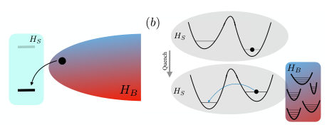
<figcaption class="paper-figure-caption"><b>Fig 1.</b> FIG. 1. Schematic illustration of the systems and quench protocols. (a) Anderson impurity model describing a single-level interacting quantum dot coupled to an electronic lead. (b) Ohmic spin-boson model describing dissipative barrier tunneling. Work is done by sud- denly changing the dot potential or biasing the tunnel barrier states.</figcaption>
</figure>
<figure class="paper-figure-card">

<figcaption class="paper-figure-caption"><b>Fig 2.</b> FIG. 2. WDFs for level quenches with U = 0 are shown in (a) and with finite U in (b). The red arrow in (b) indicates the final-state Kondo temperature of the β = 1/2 system (whose final state is in the Kondo regime, nf = 1). (c,d) WDF P(W) × (W −Wmin)β normalized to its W = Wmin value. Scaling (data collapse) is observed below W −Wmin = TK for fixed β = 1/2 and varying U in (c), and, for fixed U = 60Γ and varying β in (d).</figcaption>
</figure>
<figure class="paper-figure-card">

<figcaption class="paper-figure-caption"><b>Fig 3.</b> FIG. 4. Work distribution for quenches in the SBM. Top panels: the WDF P(W) at T = 0. (a) Bias quench ϵd = −∞→0 for several α = αi = αf &lt; 1 and fixed ∆0 = 0.05. (b) Fixed αi = αf = α = 0.9 for several ∆0. Analytical asymptotes P(W) ∼|W −Wmin|−(1−α/2)</figcaption>
</figure>
<figure class="paper-figure-card">

<figcaption class="paper-figure-caption"><b>Fig 4.</b> FIG. 3. TDNRG results for the work at finite temperatures for a level quench in the AIM with U = 12Γ and β = 1/2. WDFs for the forward quench (purple line) and the backward quench (green line) at T = Γ are shown in (a) for the negative range of W −Wmin; and in (b) the positive range of W −Wmin . The corresponding ratio of the forward-quench WDF and the backward-quench WDF (red line) and the Crooks relation (black line) is shown in (c) and (d). The first and second moments of the WDF are shown in (e) and (f).</figcaption>
</figure>
</div>

<p><strong>Summary.</strong> This paper develops an advanced numerical technique, extending TDNRG, to calculate the work distribution function for strongly coupled open quantum systems like quantum dots. By analyzing quenches, the authors reveal universal scaling laws and power-law thresholds in the WDF, confirming deep connections between non-equilibrium thermodynamics and impurity physics.</p>
<p><strong>Why it may be interesting.</strong> This work provides a numerically exact, non-perturbative tool (TDNRG) to analyze fundamental quantities in non-equilibrium quantum thermodynamics, directly addressing the complex physics of strong coupling and dissipation relevant to AMO and open quantum systems.</p>
<details>
<summary>Detailed structure</summary>
<p><strong>Main problem.</strong> The study focuses on determining the quantum work distribution function (WDF) for non-equilibrium processes in strongly coupled many-body open quantum systems following a sudden quench.</p>
<p><strong>Main result.</strong> The authors reveal power-law threshold behavior near minimum work, linked to the Anderson orthogonality catastrophe, and demonstrate universal scaling collapse below an emergent low-energy scale.</p>
<p><strong>Method.</strong> They extend the time-dependent numerical renormalization group (TDNRG) approach to calculate the WDF directly in the thermodynamic limit.</p>
<p><strong>Model / system.</strong> The work is applied to quantum impurity models, specifically citing the Anderson Impurity Model (AIM) and the Spin-Boson Model (SBM), which describe system degrees of freedom interacting with gapless baths.</p>
<p><strong>Key observables.</strong> Quantum Work Distribution Function ($P(W)$), Jarzynski's equality verification, work threshold behavior, and universal scaling collapse.</p>
<p><strong>Important parameters / regimes.</strong> Strong coupling regime, quench amplitudes (zero or finite temperature), low-energy scale induced by system-bath correlations, and the bath spectral density ($\propto \omega$ for Ohmic baths).</p>
<p><strong>Assumptions / limitations.</strong> The method is non-perturbative, necessary because previous studies often relied on approximations that fail in strongly coupled regimes.</p>
<p><strong>Figures summary.</strong> Figure 1 schematically illustrates AIM (quantum dot) and SBM (dissipative tunneling). Figure 2 shows WDFs for level quenches in AIM demonstrating scaling collapse. Figure 3 presents TDNRG results for work at finite temperatures, verifying fluctuation theorems.</p>
<p><strong>Paper structure.</strong> The paper develops the extension of TDNRG to compute $P(W)$ for generalized quantum impurity models following a quench, analyzing key diagnostics like power-law thresholds and universal scaling collapse across different temperature regimes.</p>
</details>
<details>
<summary>Abstract</summary>
<p>The non-equilibrium quantum thermodynamics of many-body open systems is notoriously rich, especially in the strong-coupling regime where strong system-bath correlations develop and interactions produce non-perturbative effects. Such systems can be described by `quantum impurity models' where the system and bath are treated on an equal footing as a single composite. Paradigmatic examples are the spin-boson and Anderson impurity models, in which system degrees of freedom interact with either bosonic or fermionic gapless baths. Here we study the quantum work distribution function (WDF) of such systems following a quench. Capturing the full continuum of many-body excitations in the WDF requires a non-perturbative solution of the underlying non-equilibrium quantum impurity problem. For this purpose, we extend the time-dependent numerical renormalization group (TDNRG) approach to the calculation of the WDF, which applies directly in the thermodynamic limit, can be used for arbitrary quench amplitudes at zero or finite temperature, and provides exponentially fine low-energy resolution. Our numerically-exact solution reveals power-law threshold behavior due to the Anderson orthogonality catastrophe when the work approaches its minimum value, with universal scaling collapse of the distribution below an emergent low-energy scale induced by system-bath correlations.</p>
</details>
<p><sub><a href="#top">↑ back to top</a></sub></p>

<p><a id="paper-2608.11041"></a></p>
<h3 id="jamming-transition-in-an-active-exclusion-process"><a href="http://arxiv.org/abs/2608.11041v1">Jamming transition in an active exclusion process</a></h3>
<p><strong>Authors:</strong> Kavita Jain, Sakuntala Chatterjee<br>
<strong>Type:</strong> theory · <strong>Category:</strong> statistical mechanics · <strong>PDF:</strong> <a href="https://arxiv.org/pdf/2608.11041v1">https://arxiv.org/pdf/2608.11041v1</a><br>
<strong>Analysis basis:</strong> full PDF text, analyzed in chunks
<strong>Topic relevance:</strong> 🔥 <code>non-equilibrium universality</code> <strong>4/5</strong> · <code>driven-dissipative phase transition</code> <strong>3/5</strong> · <code>methods for driven-dissipative</code> <strong>3/5</strong> · <code>Frenkel-Kontorova</code> <strong>2/5</strong> · <code>Keldysh / 2PI / non-Gaussian methods</code> <strong>2/5</strong> · <code>correlated / nonlocal dissipation</code> <strong>1/5</strong> · <code>scars &amp; prethermalization</code> <strong>1/5</strong></p>
<div class="figure-strip-hint">↔ Scroll figures horizontally</div>
<div class="paper-figures-scroll">
<figure class="paper-figure-card">

<figcaption class="paper-figure-caption"><b>Fig 1.</b> FIG. 1. Mean particle mobility defined in (7) for various switching rates and densities with b =</figcaption>
</figure>
<figure class="paper-figure-card">

<figcaption class="paper-figure-caption"><b>Fig 2.</b> FIG. 2. (a) Deviation, δw = w(γ →∞) −w(γ) in mobility for b = 4.75, ρ = rc = 11/15 as a</figcaption>
</figure>
<figure class="paper-figure-card">

<figcaption class="paper-figure-caption"><b>Fig 3.</b> FIG. 3. Mean mobility ws in the scaling limits, ρ, γ →0 with finite ρ/γ. (a) The points are obtained</figcaption>
</figure>
<figure class="paper-figure-card">

<figcaption class="paper-figure-caption"><b>Fig 4.</b> FIG. 4. Size distribution of hole clusters for b = 2.5 and ρ = 0.125 &lt; rc = 0.33 and various</figcaption>
</figure>
<figure class="paper-figure-card">

<figcaption class="paper-figure-caption"><b>Fig 5.</b> FIG. 5. Probability distribution of the largest hole cluster size for various values of γ with (a)</figcaption>
</figure>
</div>

<p><strong>Summary.</strong> This paper theoretically analyzes the jamming transition in an active 1D particle system where particles self-propel and randomly reverse direction. Using Monte Carlo simulations and Mean Field Theory, the authors show that activity actively resists jamming, causing the critical density for jamming to drop as activity increases. This suggests a fundamental control mechanism over phase transitions using external driving forces.</p>
<p><strong>Why it may be interesting.</strong> The work provides theoretical insights into how non-equilibrium driving forces modify fundamental phase transitions, which has parallels in understanding active matter systems relevant to biological or synthetic physical contexts.</p>
<details>
<summary>Detailed structure</summary>
<p><strong>Main problem.</strong> The study investigates how introducing activity (self-propulsion with switching) affects the jamming transition, a key non-equilibrium phase transition in passive particle systems.</p>
<p><strong>Main result.</strong> Activity generally hinders or can completely inhibit the formation of a jammed state; specifically, the critical density for jamming decreases as the switching rate decreases, potentially keeping the system fluid even at high densities.</p>
<p><strong>Method.</strong> The research employs both Monte Carlo simulations to study time evolution and Mean Field Theory (MFT) to derive steady-state equations for particle distributions and mean mobility.</p>
<p><strong>Model / system.</strong> The model is a one-dimensional ring of hard core particles where each particle has an internal binary variable ($\eta = \pm 1$) determining its self-propulsion direction, which switches at rate $    ilde{\gamma}$.</p>
<p><strong>Key observables.</strong> Mean mobility ($w$), the critical jamming density ($
ho_c$), and the distribution functions of hole clusters ($P^{\alphaeta}_n$).</p>
<p><strong>Important parameters / regimes.</strong> Particle density ($
ho$), switching rate ($   ilde{\gamma}$ or $\gamma$), and a hopping parameter $b$. Key regimes include the passive limit ($    ilde{\gamma}    o \infty$) and the small activity limit ($ ilde{\gamma}    o 0$).</p>
<p><strong>Assumptions / limitations.</strong> The Mean Field Theory approach ignores spatial correlations between sites, and certain analyses rely on perturbation theory or specific scaling limits.</p>
<p><strong>Figures summary.</strong> Figures illustrate mean particle mobility ($w$) versus density ($
ho$) and switching rate ($\gamma$), showing agreement with passive models at high $\gamma$ and summarizing the phase diagram (Fluid/Jammed).</p>
<p><strong>Paper structure.</strong> The paper progresses from defining the active system dynamics to applying MFT for steady-state analysis. It then analyzes limiting cases: large $\gamma$ (approaching passive behavior), small $\gamma$ (high activity), and finally, a scaling limit ($
ho/\gamma$ finite) to derive asymptotic behaviors.</p>
</details>
<details>
<summary>Abstract</summary>
<p>Multiple studies on active matter have shown that activity can induce or suppress a phase transition, or modify the critical behavior of a passive system. Here we investigate how activity affects the jamming transition which is a paradigmatic example of nonequilibrium phase transitions in passive systems. We consider a one-dimensional system of active particles with hardcore interactions and a direction of self-propulsion which can be reversed at a given switching rate. For a class of particle hop rates and infinite switching rate, our model reduces to a passive system which is known to exhibit a transition between a high-density fluid phase and a low-density jammed phase in the stationary state. Using Monte Carlo simulations and a mean field theory, we study how the mean mobility of the particle and the hole cluster distribution vary with density and finite switching rate. Our main result is that activity hinders the formation of jam and can even inhibit it; more precisely, we find that the jamming transition occurs at a critical density that decreases with decreasing switching rate, and at sufficiently small switching rate, the system exists only in the fluid phase.</p>
</details>
<p><sub><a href="#top">↑ back to top</a></sub></p>

<p><a id="paper-2608.10118"></a></p>
<h3 id="bounds-for-apparent-second-law-violations-in-quantum-trajectories"><a href="http://arxiv.org/abs/2608.10118v1">Bounds for Apparent Second-Law Violations in Quantum Trajectories</a></h3>
<p><strong>Authors:</strong> Domingos S. P. Salazar<br>
<strong>Type:</strong> theory · <strong>Category:</strong> statistical mechanics · <strong>PDF:</strong> <a href="https://arxiv.org/pdf/2608.10118v1">https://arxiv.org/pdf/2608.10118v1</a><br>
<strong>Analysis basis:</strong> full PDF text, analyzed in chunks
<strong>Topic relevance:</strong> 🔥 <code>quantum measurements</code> <strong>4/5</strong> · <code>methods for driven-dissipative</code> <strong>3/5</strong> · <code>non-equilibrium universality</code> <strong>3/5</strong> · <code>driven-dissipative phase transition</code> <strong>2/5</strong> · <code>Keldysh / 2PI / non-Gaussian methods</code> <strong>1/5</strong> · <code>correlated / nonlocal dissipation</code> <strong>1/5</strong></p>
<div class="figure-strip-hint">↔ Scroll figures horizontally</div>
<div class="paper-figures-scroll">
<figure class="paper-figure-card">

<figcaption class="paper-figure-caption"><b>Fig 1.</b> FIG. 1. Sign-frequency bounds. Here ΠX := P(X &lt; 0) + P(X = 0)/2 for any stochastic quantity X; thus Πσ is the tie-corrected frequency of apparent second-law violations and equals the literal negative-event frequency when P(σ = 0) = 0. (a) For 1000 random finite-coupling models governed by Eq. (12), Πσ (orange crosses) lies above ΠΩ(blue circles) and the sharp curve L(⟨Ω⟩); light segments connect the two statistics for the same model. (b) Exact four-collision statistics for the driven qubit in Eqs. (16) and (18). The inset reports Σ and Σ∗across the drive sweep.</figcaption>
</figure>
<figure class="paper-figure-card">

<figcaption class="paper-figure-caption"><b>Fig 2.</b> FIG. 2. Tie-corrected frequency and severity. (a) Exact negative tails and the standard IFT/Markov baseline e−a. (b) The exact quantity P(−a &lt; σ &lt; 0) + P(σ = 0)/2 (solid) and the combined frequency–severity bound (20) (dashed). All distributions are exact enumerations of the driven four-collision records in Eq. (18).</figcaption>
</figure>
</div>

<p><strong>Summary.</strong> This paper develops rigorous bounds on apparent violations of the Second Law in quantum trajectories using advanced fluctuation theorems. By defining a completed entropy $\Omega$, it shows that the probability of observing negative entropy production ($\sigma < 0$) is quantitatively constrained by this completed observable's mean value. This provides a deep theoretical understanding of how measurement and environment coupling enforce thermodynamic constraints.</p>
<p><strong>Why it may be interesting.</strong> This work provides a powerful theoretical tool for quantifying non-equilibrium thermodynamics in open quantum systems by linking apparent violations to measurable dynamical asymmetries, which is crucial for understanding measurement backaction and irreversible processes.</p>
<details>
<summary>Detailed structure</summary>
<p><strong>Main problem.</strong> The paper establishes rigorous bounds for apparent violations of the Second Law of Thermodynamics, specifically concerning negative stochastic entropy production in quantum trajectories.</p>
<p><strong>Main result.</strong> It derives a quantitative lower bound ($\Pi_\sigma \ge L(\langle\Omega
angle)$) showing that apparent violations are constrained by the completed entropy and dynamical asymmetry, even when standard fluctuation theorems do not strictly apply to $\sigma$ alone.</p>
<p><strong>Method.</strong> The analysis employs path reversal techniques, general arbitrary-coupling formulations, and transfers established fluctuation theorem floors from a completed observable ($\Omega$) to the physical sign statistic ($\Pi_\sigma$).</p>
<p><strong>Model / system.</strong> The theory is applied to quantum trajectories describing open evolution, modeled using random finite-coupling collision ensembles or coherently driven qubits interacting with thermal ancillas.</p>
<p><strong>Key observables.</strong> Physical entropy production ($\sigma$), dynamical-asymmetry term ($\sigma^*$), completed entropy ($\Omega$), and the tie-corrected physical sign statistic ($\Pi_\sigma$).</p>
<p><strong>Important parameters / regimes.</strong> The bound depends on the mean of the completed observable, $\langle\Omega
angle$, which controls the severity of the constraint.</p>
<p><strong>Assumptions / limitations.</strong> The derivation relies on the path law satisfying a product identity and the general applicability of fluctuation theorems to the completed observable $\Omega$.</p>
<p><strong>Figures summary.</strong> Figure 1 illustrates the derived inequality ($\Pi_\sigma \ge \Pi_\Omega \ge L(\langle\Omega
angle)$) using results from both random collision models and coherently driven qubit systems.</p>
<p><strong>Paper structure.</strong> The paper first introduces the problem of apparent violations, develops the mathematical framework relating $\sigma$ to $\Omega$, proves the optimality of the likelihood-ratio sign, derives the core inequality ($\Pi_\sigma \ge L(\langle\Omega
angle)$), and finally validates this result using two distinct physical models.</p>
</details>
<details>
<summary>Abstract</summary>
<p>Negative stochastic entropy production is commonly called an apparent violation of the second law. In general quantum-trajectory dynamics, however, the physical entropy production $σ$ need not obey a forward detailed fluctuation theorem. A general arbitrary-coupling formulation identifies a dynamical-asymmetry term $σ^\ast$ that completes it into $Ω=σ+σ^\ast$, whose mean is $\langleΩ\rangle=Σ+Σ^\ast$. We prove that the likelihood-ratio sign is optimal among reversal-odd trajectory observables and use this fact to transfer an established sharp fluctuation-theorem floor to the tie-corrected physical sign statistic $Π_σ=\Pr(σ<0)+\Pr(σ=0)/2$. When $\Pr(σ=0)=0$, the result reads $\Pr(σ<0)\ge[1-\langleΩ\rangle/g(\langleΩ\rangle)]/2$, where $g$ is the inverse of $a\mapsto a\tanh(a/2)$. The physical integral fluctuation theorem simultaneously suppresses large negative events, producing a quantitative ``frequent but mild'' law, while the sign imbalance lower-bounds the hidden mean $Σ^\ast$. We formulate the measured-record protocol explicitly and illustrate and numerically audit the tie-corrected theorem in random finite-coupling collision models and a coherently driven qubit interacting with thermal ancillas.</p>
</details>
<p><sub><a href="#top">↑ back to top</a></sub></p>

<p><a id="paper-2608.10663"></a></p>
<h3 id="photonic-realization-of-a-subgraph-extraction-in-a-quantum-random-network"><a href="http://arxiv.org/abs/2608.10663v1">Photonic realization of a subgraph extraction in a quantum random network</a></h3>
<p><strong>Authors:</strong> Lijun Xia, Xuemei Gu, Kai Wang, Leizhen Chen, Mario Krenn, Yan-Qing Lu, Shining Zhu, Xiao-Song Ma<br>
<strong>Type:</strong> experiment · <strong>Category:</strong> quantum information and computing · <strong>PDF:</strong> <a href="https://arxiv.org/pdf/2608.10663v1">https://arxiv.org/pdf/2608.10663v1</a><br>
<strong>Analysis basis:</strong> full PDF text, analyzed in chunks
<strong>Topic relevance:</strong> 🔥 <code>QC/QI experiment</code> <strong>4/5</strong> · <code>analog quantum simulation</code> <strong>3/5</strong> · <code>quantum optics experiment</code> <strong>3/5</strong> · <code>interference shaping light</code> <strong>1/5</strong> · <code>quantum measurements</code> <strong>1/5</strong></p>
<div class="figure-strip-hint">↔ Scroll figures horizontally</div>
<div class="paper-figures-scroll">
<figure class="paper-figure-card">

<figcaption class="paper-figure-caption"><b>Fig 1.</b> Figure 1. Schematic illustration of the protocol. (a) Four-node quantum random network module. Each dashed green edge denotes a probabilistic Bell-state link |Φ+⟩. (b) Experimental pair-creation graph for preparing the resource state |G⟩. Each edge denotes a probabilistic photon-pair creation process, and edge colors label the local photon modes. The two edges between nodes C and D have a relative weight 1/ √</figcaption>
</figure>
<figure class="paper-figure-card">

<figcaption class="paper-figure-caption"><b>Fig 2.</b> Figure 2. Overview of the experiment and the integrated photonic circuit. Two picosecond pump pulses at different wavelengths are coupled into the chip via a grating coupler and equally distributed to eight DMZI-Rs. Within the DMZI-Rs, the pump pulses (1544.78 nm and 1556.84 nm) generate photon pairs at 1550.81 nm through spontaneous four-wave mixing. The photons are then routed through delay lines that match their arrival times and establish coherent node-to-node connections, preparing the resource state |G⟩(after the white dashed line). The projections Pi (i ∈{A, B, D}) convert the |G⟩into |Λ⟩ after the green dashed line. Local unitaries Ui (i ∈{B, C, D}) are then applied for...</figcaption>
</figure>
<figure class="paper-figure-card">

<figcaption class="paper-figure-caption"><b>Fig 3.</b> Figure 3. Experimental edge probability and distribution of the resource state |G⟩. (a), Normalized two-fold coinci- dence probabilities measured in the computational basis. The results (blue bars) are shown for all possible basis combinations between node pairs, where the horizontal-axis labels denote the basis states |ij⟩with mode indices i, j taking values in {1, 3} for node A, {1, 3, 4} for node B, and {1, 2, 3, 4} for nodes C and D. The statistical overlap between the experimental and ideal distributions is γ = 0.9620(2). (b), Connection-probability distribution for each node (blue bars), obtained by summing the corresponding nonzero contributions in (a) and normalizing over all...</figcaption>
</figure>
<figure class="paper-figure-card">

<figcaption class="paper-figure-caption"><b>Fig 4.</b> Figure 4. Witnessing genuine (2, 4, 2) high-dimensional entanglement. (a), Measured expectation values for the Pauli- operator combinations used in the entanglement witness. (b), Witness-relevant real density-matrix elements extracted from the measurement data, together with the corresponding ideal elements of the target state |Λ⟩. Grey elements denote unmeasured or zero components. From the measured nonzero elements, we obtain a fidelity of 0.7801(72), exceeding the genuine (2, 4, 2) entanglement bound of 0.75 by about 4.2σ (uncertainty denotes ±1σ, obtained from 1000 Monte Carlo simulations with Poissonian error).</figcaption>
</figure>
</div>

<p><strong>Summary.</strong> The research experimentally realizes a specific quantum subgraph within a quantum random network using an integrated silicon photonic chip. By exploiting entangled photon pairs and local operations, the authors demonstrate connectivity patterns achievable only through quantum entanglement, validating predictions from QRN theory over classical models.</p>
<p><strong>Why it may be interesting.</strong> This work provides concrete experimental evidence in photonics that harnesses genuine multipartite entanglement to engineer complex quantum structures predicted by advanced network theories, bridging fundamental theory with scalable hardware.</p>
<details>
<summary>Detailed structure</summary>
<p><strong>Main problem.</strong> The study aims to experimentally realize a quantum subgraph structure predicted by quantum random network theory, contrasting this with classical connectivity thresholds.</p>
<p><strong>Main result.</strong> The authors successfully demonstrated the preparation of a specific finite quantum subgraph ($\lambda$ graph) using an integrated photonic chip, confirming that entanglement enables connectivity structures inaccessible classically.</p>
<p><strong>Method.</strong> The experiment uses probabilistic photon-pair sources and local transformations on an integrated silicon photonic chip, followed by mode-selective postselection to extract the desired entangled state.</p>
<p><strong>Model / system.</strong> The physical platform is an integrated silicon photonic chip utilizing spontaneous four-wave mixing for generating Bell-state links. The theoretical framework compares classical random graphs (Erdős–Rényi) with Quantum Random Networks (QRN).</p>
<p><strong>Key observables.</strong> Fidelity ($F_{\exp}$), entanglement witness values ($W$), and visibility measurements (RHOM/HHOM contrast/visibility).</p>
<p><strong>Important parameters / regimes.</strong> The experiment operates in a regime distinct from the large-$N$ threshold scaling, focusing on finite subgraph realization.</p>
<p><strong>Assumptions / limitations.</strong> The protocol relies on probabilistic photon-pair sources and postselection; the fidelity calculations assume measurement capability across all required projections.</p>
<p><strong>Figures summary.</strong> Figures illustrate the experimental setup using integrated photonic circuits, schematic protocols for state preparation (e.g., four-node module), and interference patterns used for characterization.</p>
<p><strong>Paper structure.</strong> The paper progresses from establishing the theoretical difference between classical and quantum network connectivity to detailing the physical implementation on a silicon chip, followed by rigorous measurements of entanglement dimensionality using fidelity and visibility witnesses.</p>
</details>
<details>
<summary>Abstract</summary>
<p>Understanding how complex connectivity emerges in networks is a fundamental challenge in classical and quantum science. In classical random networks, complex subgraphs typically require relatively high connection probabilities, whereas quantum random network theory predicts that such structures can arise at a single, lower threshold through entanglement and local operations. Here, using an integrated silicon photonic chip, we experimentally realize a quantum subgraph predicted by quantum random network theory in a four-node quantum random network. Our integrated platform exploits probabilistic photon-pair sources and coherent control of path modes to prepare a structured quantum subgraph through local transformations and postselection, operating in a threshold regime that differs from classical random networks. We verify that the subgraph state exhibits genuine high-dimensional multipartite entanglement across the nodes, providing experimental evidence that quantum entanglement enables connectivity structures beyond classical accessibility.</p>
</details>
<p><sub><a href="#top">↑ back to top</a></sub></p>

<p><a id="paper-2608.10831"></a></p>
<h3 id="projection-measurement-of-the-comb-basis-through-free-electron-photon-interactions"><a href="http://arxiv.org/abs/2608.10831v1">Projection measurement of the comb basis through free-electron-photon interactions</a></h3>
<p><strong>Authors:</strong> Zihang Zou, Feng-Xiao Sun, Yunquan Liu, Qiongyi He<br>
<strong>Type:</strong> theory · <strong>Category:</strong> quantum information and computing · <strong>PDF:</strong> <a href="https://arxiv.org/pdf/2608.10831v1">https://arxiv.org/pdf/2608.10831v1</a><br>
<strong>Analysis basis:</strong> full PDF text, analyzed in chunks
<strong>Topic relevance:</strong> 🔥 <code>quantum measurements</code> <strong>4/5</strong> · <code>quantum optics experiment</code> <strong>3/5</strong> · <code>analog quantum simulation</code> <strong>2/5</strong> · <code>QC/QI experiment</code> <strong>1/5</strong> · <code>driven-dissipative phase transition</code> <strong>1/5</strong> · <code>methods for driven-dissipative</code> <strong>1/5</strong></p>
<div class="figure-strip-hint">↔ Scroll figures horizontally</div>
<div class="paper-figures-scroll">
<figure class="paper-figure-card">

<figcaption class="paper-figure-caption"><b>Fig 1.</b> FIG. 2. (a) The fidelity between the auxiliary optical states generated from the electron obtained in our FECBPM scheme |ψout ph ⟩and the ideal comb state |ψideal ph ⟩for different coupling strengths gtest. And the Wigner functions of (b) |ψout ph ⟩and (c) |ψideal ph ⟩are present with gtest = 1.0, respectively. Other parameters are g = √</figcaption>
</figure>
<figure class="paper-figure-card">

<figcaption class="paper-figure-caption"><b>Fig 2.</b> FIG. 1. The experimental scheme for FECBPM. The low fre- quency part is based on the PINEM platform, where free elec- tron interacts with two optical modes of orthogonal squeezing angles. Then we perform homodyne detections on the output optical modes, and the outcomes project the free electron to the associated comb state non-destructively. Further, the high frequency part can be applied to enhance the measurement accuracy.</figcaption>
</figure>
<figure class="paper-figure-card">

<figcaption class="paper-figure-caption"><b>Fig 3.</b> FIG. 3. The probability distribution on comb basis of (a) the initial state, (b) the state after the FSP with errors δ = 0.01, and (c) the state after error mitigation with g = √</figcaption>
</figure>
<figure class="paper-figure-card">

<figcaption class="paper-figure-caption"><b>Fig 4.</b> FIG. 4. EPR steering detection for electron-photon states. (a) The values of ∆2 infX∆2 infP for coupled electron qubits and optical displaced thermal states [Eq. (8)] varies with the coupling strength g for different average photon numbers ¯n. (b) ∆2 infN∆2 infϕ varies with the average photon number ¯n of the optical thermal states for different PINEM coupling strengths g. The black dashed line denotes the EPR steering bound, below which EPR steering can be detected.</figcaption>
</figure>
</div>

<p><strong>Summary.</strong> The paper proposes a method using free-electron-photon interactions to perform nondestructive projection measurements on the electron comb basis. This technique overcomes the limitations of traditional destructive measurements by coupling the electron state to auxiliary optical modes. The results demonstrate that this setup can be used for quantum error mitigation and detecting entanglement (EPR steering) between the electron qubit and the photon field.</p>
<p><strong>Why it may be interesting.</strong> This work bridges condensed matter physics (free electrons) with advanced quantum optics techniques (squeezing, homodyne detection) to establish a novel platform for non-destructive quantum state characterization and computation in solid-state systems.</p>
<details>
<summary>Detailed structure</summary>
<p><strong>Main problem.</strong> Conventional measurements on free electrons are destructive, limiting their use as quantum qubits. The goal is to perform nondestructive projection measurement on the electron comb basis.</p>
<p><strong>Main result.</strong> A proposed scheme (FECBPM) allows for nondestructive measurement of the electron comb basis and demonstrates its utility in quantum error mitigation and witnessing EPR steering between electrons and photons.</p>
<p><strong>Method.</strong> The method involves coupling free electrons to optical modes via PINEM interactions, followed by projection measurement using orthogonal squeezed vacuum states and homodyne detection on the auxiliary optical mode.</p>
<p><strong>Model / system.</strong> The system is a free electron interacting with photon modes in a Near-field Electron Microscopy (PINEM) setup. The interaction Hamiltonian governs the coupling, leading to an effective scattering operator that describes state evolution.</p>
<p><strong>Key observables.</strong> Fidelity of optical modes ($
ho_i^{ph}$), violation of EPR steering inequalities ($\Delta^2_{  ext{inf}X}\Delta^2_{    ext{inf}P} &lt; 1/4$), and the measurable phase shift $\delta\phi$.</p>
<p><strong>Important parameters / regimes.</strong> Coupling strength ($g$), squeezing parameter ($r$), and error parameters like propagation distance ($\phi$) or thermal photon occupation ($ar{n}$).</p>
<p><strong>Assumptions / limitations.</strong> The analysis relies on comparing optical state fidelities rather than direct electron state fidelity due to mathematical constraints; the use of squeezed vacuum states approximates ideal quadrature measurements.</p>
<p><strong>Figures summary.</strong> Figures illustrate the experimental scheme using squeezing angles, compare measured vs. ideal optical state fidelities (Wigner functions), show probability distributions before and after error mitigation, and demonstrate EPR steering detection dependence on coupling strength and thermal noise.</p>
<p><strong>Paper structure.</strong> The paper develops the theoretical framework by first defining the electron-photon interaction Hamiltonian and scattering operator; it then details the conditions for reliable projection measurement via homodyne detection; subsequently, it applies this to quantum error correction and finally analyzes EPR steering criteria.</p>
</details>
<details>
<summary>Abstract</summary>
<p>Free electrons, driven by rapid advances in photon-induced near-field electron microscopy, have emerged as a promising platform for quantum information processing, including quantum computing and quantum sensing. However, conventional measurements that rely on the electron energy loss spectrum (EELS) are inherently destructive to electron qubits, thereby constraining their applicability. In this Letter, we propose a scheme that performs projection measurement on the electron comb basis, where high measurement precision can be achieved with bright squeezed vacuum states and strong PINEM couplings. Notably, this approach is not only nondestructive to electron qubits but also maximally incompatible with energy measurements, enabling alternative quantum information applications, such as quantum error mitigation and Einstein-Podolsky-Rosen steering detection. Our findings open an avenue towards a systematic understanding of quantum free electrons and towards the development of nondestructive free electron quantum information tasks.</p>
</details>
<p><sub><a href="#top">↑ back to top</a></sub></p>

<p><a id="paper-2608.11072"></a></p>
<h3 id="assessing-fidelity-limiting-factors-and-achieving-single-qubit-gate-fidelity-beyond-99999-in-driven-silicon-spin-qubits"><a href="http://arxiv.org/abs/2608.11072v1">Assessing fidelity-limiting factors and achieving single-qubit gate fidelity beyond 99.999% in driven silicon spin qubits</a></h3>
<p><strong>Authors:</strong> Kenta Takeda, Akito Noiri, Takashi Nakajima, Leon C. Camenzind, Takashi Kobayashi, Giordano Scappucci, Seigo Tarucha<br>
<strong>Type:</strong> experiment · <strong>Category:</strong> quantum information and computing · <strong>PDF:</strong> <a href="https://arxiv.org/pdf/2608.11072v1">https://arxiv.org/pdf/2608.11072v1</a><br>
<strong>Analysis basis:</strong> full PDF text, analyzed in chunks
<strong>Topic relevance:</strong> 🔥 <code>QC/QI experiment</code> <strong>4/5</strong> · <code>correlated / nonlocal dissipation</code> <strong>2/5</strong> · <code>quantum measurements</code> <strong>2/5</strong> · <code>driven-dissipative phase transition</code> <strong>1/5</strong> · <code>methods for driven-dissipative</code> <strong>1/5</strong> · <code>quantum optics experiment</code> <strong>1/5</strong></p>
<div class="figure-strip-hint">↔ Scroll figures horizontally</div>
<div class="paper-figures-scroll">
<figure class="paper-figure-card">

<figcaption class="paper-figure-caption"><b>Fig 1.</b> Fig. 1, Basic device properties. a, False-color scanning electron microscope image of the device. The</figcaption>
</figure>
<figure class="paper-figure-card">

<figcaption class="paper-figure-caption"><b>Fig 2.</b> Fig. 2, Qubit characterization with an adjacent reservoir. The measurements are performed for Q2 (see</figcaption>
</figure>
<figure class="paper-figure-card">

<figcaption class="paper-figure-caption"><b>Fig 3.</b> Fig. 3, Heating effect and temperature dependence. a, Schematic of heating effect measurement. The</figcaption>
</figure>
<figure class="paper-figure-card">

<figcaption class="paper-figure-caption"><b>Fig 4.</b> Fig. 4, Pulse shape comparison and characterization of off-resonant driving. Measurements are</figcaption>
</figure>
<figure class="paper-figure-card">

<figcaption class="paper-figure-caption"><b>Fig 5.</b> Fig. 5, RB fidelity characterizations. Gaussian pulses with a peak Rabi frequency of 3 MHz are used</figcaption>
</figure>
</div>

<p><strong>Summary.</strong> The research reports achieving single-qubit gate fidelities above 99.999% in silicon spin qubits by addressing decoherence mechanisms inherent to microwave driving. Key findings pinpoint that proximal reservoirs degrade the critical $T_{1
ho}$ coherence time, and using spectrally tailored Gaussian pulses minimizes benchmarking artifacts. This work establishes practical limits for high-fidelity quantum operations in solid-state systems.</p>
<p><strong>Why it may be interesting.</strong> This work provides crucial experimental guidelines for scaling quantum computation by quantifying how specific noise sources—like reservoir coupling and off-resonant excitation—limit gate performance in solid-state qubits.</p>
<details>
<summary>Detailed structure</summary>
<p><strong>Main problem.</strong> The primary goal is achieving single-qubit gate fidelities exceeding 99.999% in driven silicon spin qubits while rigorously identifying the physical mechanisms that limit this performance.</p>
<p><strong>Main result.</strong> High fidelities were achieved by mitigating decoherence sources, particularly by optimizing device conditions to suppress off-resonant driving effects and extending the spin-locking coherence time ($T_{1
ho}$).</p>
<p><strong>Method.</strong> The study employs randomized benchmarking (RB) and purity measurements alongside detailed characterization of various coherence times ($T_2^*$, $T_{1
ho}$) under microwave driving.</p>
<p><strong>Model / system.</strong> The platform is semiconductor single-spin qubits realized in silicon quantum dots, controlled via Electric Dipole Spin Resonance (EDSR). The analysis models noise sources arising from proximal reservoirs and off-resonant microwave excitation.</p>
<p><strong>Key observables.</strong> Single-qubit gate fidelity ($\pi/2$ rotation), spin-locking coherence time ($T_{1
ho}$), $T_2^*$ echo decay, and frequency shifts due to heating.</p>
<p><strong>Important parameters / regimes.</strong> Gate fidelity target $>99.999\%$; reservoir proximity distance ($d$); Rabi frequency ($f_{	ext{Rabi}}$); temperature ($T_{	ext{MXC}}$).</p>
<p><strong>Assumptions / limitations.</strong> The residual error is primarily limited by incoherent noise, and the analysis models capacitive coupling ($\eta(d)$) between the qubit and external reservoirs.</p>
<p><strong>Figures summary.</strong> Figures illustrate SEM images of the device, measurement sequences (PSB readout), spin resonance spectra, coherence time measurements ($T_{1
ho}$ vs. reservoir proximity), and fidelity decay plots comparing RB and purity results for different pulse shapes.</p>
<p><strong>Paper structure.</strong> The paper progresses by first establishing basic qubit characterization (coherence times) in the presence of varying environmental couplings (reservoirs). It then investigates systematic errors from microwave driving (pulse shaping, heating) before concluding with optimized protocols that achieve state-of-the-art fidelity benchmarks.</p>
</details>
<details>
<summary>Abstract</summary>
<p>In semiconductor single-spin qubits, high-fidelity quantum gates have been demonstrated; however, achieving consistent performance remains challenging due to variations in driven qubit coherence, which is less explored than free-evolution coherence such as $T_2^*$. Here, we report single-qubit gate fidelities above 99.999%, achieved by dramatically extending the driven-spin coherence time and suppressing off-resonant driving effects that are detrimental to accurate fidelity benchmarking. We demonstrate that removing proximal reservoirs significantly enhances the spin-locking coherence time ($T_{1ρ}$), a critical metric for qubits under microwave driving. Furthermore, we reveal that in typical spin qubit setups using parity readout and rectangular pulses, off-resonant excitation of neighboring qubits causes substantial benchmarking artifacts. By optimizing device conditions to mitigate microwave-induced degradation and implementing spectrally tailored pulse shaping, we achieve a $π/2$ gate fidelity of 99.99920(2)%, with remaining errors primarily limited by incoherent noise. These results showcase the mechanisms that bound fidelity benchmarking in state-of-the-art silicon spin qubits and provide practical guidelines for achieving and verifying high fidelities in these systems.</p>
</details>
<p><sub><a href="#top">↑ back to top</a></sub></p>

<p><a id="paper-2608.10087"></a></p>
<h3 id="long-lived-memory-effects-in-the-defect-bath-of-superconducting-qubits"><a href="http://arxiv.org/abs/2608.10087v1">Long-lived memory effects in the defect bath of superconducting qubits</a></h3>
<p><strong>Authors:</strong> Abhishek Agarwal, Masum Uddin, Shroya Vaidya, Lachlan P. Lindoy, Ehsaneh Daghigh Ahmadi, Tobias Lindström, Sebastian E. de Graaf, Ivan Rungger<br>
<strong>Type:</strong> experiment · <strong>Category:</strong> quantum information and computing · <strong>PDF:</strong> <a href="https://arxiv.org/pdf/2608.10087v1">https://arxiv.org/pdf/2608.10087v1</a><br>
<strong>Analysis basis:</strong> full PDF text, analyzed in chunks
<strong>Topic relevance:</strong> 🔥 <code>QC/QI experiment</code> <strong>4/5</strong> · <code>correlated / nonlocal dissipation</code> <strong>3/5</strong> · <code>quantum measurements</code> <strong>2/5</strong> · <code>driven-dissipative phase transition</code> <strong>1/5</strong> · <code>methods for driven-dissipative</code> <strong>1/5</strong></p>
<div class="figure-strip-hint">↔ Scroll figures horizontally</div>
<div class="paper-figures-scroll">
<figure class="paper-figure-card">

<figcaption class="paper-figure-caption"><b>Fig 1.</b> FIG. 1. (a) The experimental protocol showing the circuit repeatedly applied on the qubit (black) and the waveform of the applied voltage Vg via the gate electrode (orange). In the circuit diagram, the Xπ/2 pulse followed by readout ran- domly projects the qubit to the |0⟩or |1⟩state. Measure- ments where the qubit was projected to |1⟩are discarded in post-processing [37]. The remaining circuit is a single-point T1 measurement. (b) Probability of the qubit remaining ex- cited, Pe, as a function of sweep time t within each voltage sweep, plotted over the laboratory time Te at which each ex- periment was performed. The dark vertical trajectories cor- respond to individual TLS defects that...</figcaption>
</figure>
<figure class="paper-figure-card">

<figcaption class="paper-figure-caption"><b>Fig 2.</b> FIG. 2. Two sets of repeated experiments are performed with sweep rates 50 Vs−1 (Te = 0−60 h) and 10 Vs−1 (Te = 80−130 h) and the quantities (a) Pe,↑, (b) Pe,↓, and (c) ∆Pe = Pe,↑−Pe,↓are plotted as a function of Vg over time. The areas surrounding the two dominant strongly coupled TLS, labelled TLS-1 and TLS-2, are highlighted in purple and green, respectively, for better visibility. (d-f) Representative examples of different hysteresis effects, with the colour of the box corresponding to the regions marked in (a-c) with the same colours. Panels (d,e) show the time-averaged result during the boxed region. (f) Zoomed-in view of the region highlighted in the maroon boxes showing hysteresis...</figcaption>
</figure>
<figure class="paper-figure-card">

<figcaption class="paper-figure-caption"><b>Fig 3.</b> FIG. 3. Zoomed-in view of the results in Fig. 2(a,b) show- ing (a) Pe,↑and (b) Pe,↓. In (b), for times &lt; 35 h, TLS-1 reappears abruptly at a well-defined threshold voltage, con- sistent with switching of the CF. This abrupt reappearance is highlighted in the high-contrast zoomed-in inset in (b). The inferred CF thresholds V ↑ th and V ↓ th are marked on the right, together with a schematic representation of how the CF po- tential varies with the applied Vg and causes the reappearance hysteresis.</figcaption>
</figure>
<figure class="paper-figure-card">

<figcaption class="paper-figure-caption"><b>Fig 4.</b> FIG. 4. Results of interleaved experiments with different sweep rates vsweep. The different sweep rates are shown in different columns, while (a) and (b) show Pe,↑and Pe,↓, respectively. Sweep-rate dependence is not observed in (a), but is visible in (b), where TLS-1 appears at the lower-voltage location with higher probability for lower sweep rates. This is quantified in (c,d), where the probabilities of TLS-1 appearing in the left, right, or both locations are plotted. The dashed lines in (c,d) are fits to a model with CF symmetry point Vsym ∼−4.6 V and equilibration time τeq ≃5 s.</figcaption>
</figure>
</div>

<p><strong>Summary.</strong> This paper experimentally reveals that superconducting transmon qubits suffer from memory effects caused by slow charge fluctuations within the material's defect bath. By tuning the electric field, the authors measured hysteretic changes in qubit decay rates with timescales reaching seconds. This work provides vital insights into non-Markovian noise sources, which is critical for advancing robust quantum computation.</p>
<p><strong>Why it may be interesting.</strong> This work directly addresses noise sources in superconducting qubits by characterizing non-Markovian noise from defect baths, providing crucial data for improving qubit stabilization and quantum error correction protocols.</p>
<details>
<summary>Detailed structure</summary>
<p><strong>Main problem.</strong> The study investigates long-lived memory effects originating from defect baths coupled to superconducting qubits, which introduce detrimental temporally correlated noise.</p>
<p><strong>Main result.</strong> The research observed memory timescales on the order of seconds, significantly exceeding typical coherence times, attributed to coupling with electric field-polarized charge fluctuators (CFs).</p>
<p><strong>Method.</strong> The authors used electric-field tuning via a gate electrode and performed fast, repeated measurements of qubit relaxation probability ($P_e$) over extended laboratory time.</p>
<p><strong>Model / system.</strong> The physical system is a superconducting transmon qubit coupled to microscopic Two-Level System (TLS) defects. The memory effects are modeled by coupling the TLSs to electric field-polarized charge fluctuators (CFs).</p>
<p><strong>Key observables.</strong> Qubit relaxation probability ($P_e$), hysteretic behavior in TLS resonance voltages, and sweep-rate dependence of $P_e$.</p>
<p><strong>Important parameters / regimes.</strong> Memory timescales ($    au \sim$ seconds), electric field tuning voltage ($V_g$), and the characteristic equilibration time ($    au_{eq} \approx 5.4$ s).</p>
<p><strong>Assumptions / limitations.</strong> The analysis assumes the qubit transition frequency is insensitive to offset charge, and the CF model uses an approximation near the symmetry point.</p>
<p><strong>Figures summary.</strong> Figures illustrate the experimental protocol, showing $P_e$ vs. sweep time over long lab times, comparing increasing/decreasing sweeps to reveal hysteresis, and demonstrating sweep-rate dependence of the measured probabilities.</p>
<p><strong>Paper structure.</strong> The paper details the experimental setup using electric-field tuning, presents measurements showing hysteretic behavior indicative of memory effects, models these effects using a charge-fluctuator approach, and quantifies the long equilibration times observed.</p>
</details>
<details>
<summary>Abstract</summary>
<p>We reveal long-lived memory effects in the defect bath of a superconducting transmon qubit through electric-field tuning of two-level system (TLS) defects coupled to the qubit. Using a fast TLS mapping method we observe several hysteretic effects in the TLS environment with memory timescales of the order of seconds, far beyond the lifetimes of individual TLS defects. The observations can be explained by TLS coupling to electric field-polarised charge fluctuators in the defect bath. Our method enables detailed mapping of the dynamics of the bath's coupled microscopic degrees of freedom and the associated memory effects which can introduce temporally correlated noise. This information may be used to improve qubit-stabilisation and quantum error correction protocols.</p>
</details>
<p><sub><a href="#top">↑ back to top</a></sub></p>

<p><a id="paper-2608.10078"></a></p>
<h3 id="eliminating-photon-transport-in-long-baseline-optical-interferometry-using-quantum-memories"><a href="http://arxiv.org/abs/2608.10078v1">Eliminating photon transport in long-baseline optical interferometry using quantum memories</a></h3>
<p><strong>Authors:</strong> Yousef K. Chahine, Chaohan Cui, William DeRocco, Daniel Gottesman, Saikat Guha, Emil T. Khabiboulline, Zhenning Liu, Brittany McClinton, Jayadev Rajagopal, Fredrik Rantakyro, J. Gabriel Richardson, Stephen Ridgway, Aqil Sajjad, Joohyung Song<br>
<strong>Type:</strong> theory · <strong>Category:</strong> quantum information and computing · <strong>PDF:</strong> <a href="https://arxiv.org/pdf/2608.10078v1">https://arxiv.org/pdf/2608.10078v1</a><br>
<strong>Analysis basis:</strong> full PDF text, analyzed in chunks
<strong>Topic relevance:</strong> 🔥 <code>interference shaping light</code> <strong>4/5</strong> · <code>quantum measurements</code> <strong>3/5</strong> · <code>correlated / nonlocal dissipation</code> <strong>1/5</strong></p>
<div class="figure-strip-hint">↔ Scroll figures horizontally</div>
<div class="paper-figures-scroll">
<figure class="paper-figure-card">

<figcaption class="paper-figure-caption"><b>Fig 1.</b> Figure 1: Maximum visibility of two-site interference with time bin synchronization error τ relative to the memory exposure bin width tw for various coherence time ratios tc/tw. Based on analysis of a spectrally-filtered weak thermal field loaded into a sequence of temporally-gated quantum memories.</figcaption>
</figure>
</div>

<p><strong>Summary.</strong> This paper outlines a revolutionary method for long-baseline optical interferometry that replaces the need to physically transport light over kilometers by storing and processing photon coherence within quantum memories. By mapping the astronomical signal onto memory states, it fundamentally changes the stability requirements from maintaining path length accuracy to controlling local timing and phase references. This advances the field by merging quantum information techniques with cutting-edge astrophysics instrumentation.</p>
<p><strong>Why it may be interesting.</strong> This work is highly relevant as it applies advanced concepts from quantum information (entanglement distribution, memory storage) to solve a major problem in experimental quantum optics/astrophysics. The shift in required stability metrics provides new theoretical frameworks for analyzing complex quantum measurement protocols.</p>
<details>
<summary>Detailed structure</summary>
<p><strong>Main problem.</strong> The paper addresses the fundamental limitations of classical long-baseline optical interferometry for astrophysical measurements by proposing a quantum memory-based approach.</p>
<p><strong>Main result.</strong> Using quantum memories allows the measurement of photon coherences across distant sites without requiring the physical transport and recombination of light over vast distances, shifting stability concerns from path length to local timing control.</p>
<p><strong>Method.</strong> The method involves mapping the coherent superposition state of incoming photons onto a collective quantum memory state using entanglement-assisted operations. Coherence is then interrogated via joint measurements on the stored quantum states.</p>
<p><strong>Model / system.</strong> The system modeled is an optical interferometer utilizing multiple distant telescopes (A, B, etc.) whose light signals are captured and processed within solid-state or atomic quantum memories. The process relies on entanglement to correlate information across these separated nodes.</p>
<p><strong>Key observables.</strong> Mutual coherence ($G_{AB}(t)$), complex visibility, and the reconstructed fringe term which depends on residual differential delay ($\delta	au(t)$).</p>
<p><strong>Important parameters / regimes.</strong> Coherence time ($   au_c$), memory bin width ($t_w$), synchronization error ($   au$), and the required phase stability for local oscillators.</p>
<p><strong>Assumptions / limitations.</strong> The primary assumption is that quantum memories can successfully capture, store, and allow joint measurement of the complex superposition state of incoming photons from multiple sources. It also assumes established techniques for phase referencing remain necessary.</p>
<p><strong>Paper structure.</strong> The paper first contrasts classical interferometry limitations with quantum memory approaches, detailing how the stability requirement shifts. It then describes the core mechanism of state transfer into memories and discusses the reconstruction of visibility via joint measurements on stored states, concluding with a discussion of remaining technological hurdles.</p>
</details>
<details>
<summary>Abstract</summary>
<p>In this paper, we describe the fundamental operating mechanisms of optical interferometry using quantum memory and entanglement. We show how these remove the optical delay line bottleneck. Quantum memory is not without its own set of challenges, some of which include very small bandwidths as well as limitations in storage time. We examine the influence of timing artifacts on memory photon capture probability and interferometric complex visibility. We highlight keystone areas of technology that require further development and are essential to realizing these opportunities, as well as ongoing work to overcome these challenges.</p>
</details>
<p><sub><a href="#top">↑ back to top</a></sub></p>

<p><a id="paper-2608.10632"></a></p>
<h3 id="nanoscale-graphitization-and-defect-evolution-in-silicon-vacancy-center-containing-nanodiamonds-under-high-pressure-high-temperature-annealing"><a href="http://arxiv.org/abs/2608.10632v1">Nanoscale graphitization and defect evolution in silicon-vacancy center-containing nanodiamonds under high-pressure high-temperature annealing</a></h3>
<p><strong>Authors:</strong> M. De Feudis, B. Yavkin, L. Henry, K. O. Ho, M. -P. Adam, P. Goldner, F. Benedic, S. Desgreniers, J. -F. Roch<br>
<strong>Type:</strong> experiment · <strong>Category:</strong> quantum information and computing · <strong>PDF:</strong> <a href="https://arxiv.org/pdf/2608.10632v1">https://arxiv.org/pdf/2608.10632v1</a><br>
<strong>Analysis basis:</strong> full PDF text, analyzed in chunks
<strong>Topic relevance:</strong> 🔥 <code>QC/QI experiment</code> <strong>4/5</strong> · <code>quantum optics experiment</code> <strong>2/5</strong> · <code>quantum measurements</code> <strong>1/5</strong></p>
<div class="figure-strip-hint">↔ Scroll figures horizontally</div>
<div class="paper-figures-scroll">
<figure class="paper-figure-card">

<figcaption class="paper-figure-caption"><b>Fig 1.</b> Fig. 1. (a) PL spectrum registered at room temperature on a Si-doped as-grown ND cluster showing the highly emissive SiV centers (excitation at 473 nm). Inset: magnification of the d Raman peak (range 500-515 nm). The close small band at around 508 nm (1450 cm−1) can be ascribed to vibrations of trans-polyacetylene molecules, typical of the CVD diamond synthesis technique [32]. (b) PL spectra of SiV centers registered on as-grown NDs showing the evolution of the ZPL peak as a function of the temperature down to 9 K (step ≈15 K, excitation at 532 nm); (c) corresponding correlation between line center and linewidth, displaying an approximately linear trend.</figcaption>
</figure>
<figure class="paper-figure-card">

<figcaption class="paper-figure-caption"><b>Fig 2.</b> Fig. 2. (a) PE press installed at the PSICHE beamline of the SOLEIL synchrotron. (b) Photograph of the final 10 mm assembly. (c) Exploded view of the assembly components inside the gasket: the sample is enclosed in a hBN capsule, which is placed inside a graphite furnace, while three disks (graphite, molybdenum, and a magnesium oxide–steel ring) are positioned above and below the capsule to ensure uniform pressure and temperature conditions. (d) Sandwich-type sample configuration inside the hBN capsule, from bottom to top: a layer of milled NaCl salt grains and Pt spheres, a layer of ND particles, and a final layer of milled NaCl salt grains and Pt spheres.</figcaption>
</figure>
<figure class="paper-figure-card">

<figcaption class="paper-figure-caption"><b>Fig 3.</b> Fig. 3. Tomographic sequence of the 10 mm assembly recorded during HPHT annealing using a PE press under different pressure and temperature conditions: (a) at room temperature and ambient pressure, the sample is correctly positioned with respect to the X-ray beam, and the various components of the assembly are clearly visible; (b) at 2 GPa and room temperature, the assembly components remain preserved while salt (NaCl) densification initiates; (c) at 2 GPa and 925 K, enhanced compaction leads to the onset of salt recrystallization; (d) at 2 GPa and 1425 K, further heating results in NaCl melting (as confirmed from XRD analysis).</figcaption>
</figure>
<figure class="paper-figure-card">

<figcaption class="paper-figure-caption"><b>Fig 4.</b> Fig. 4. Pressure–temperature calibration of the 10 mm and 5 mm PE press as­ semblies. The pressure data were obtained from experimental XRD peaks using the equations of state (EOS) for hBN and NaCl, respectively. The grey curve correspond to the NaCl melting curve reported by Akella et al. [40] and in­ tersects the experimentally determined melting points (T = 1425 K @ 2 GPa and T = 1770 K @ 4 GPa), confirming the reliability of the pressure–temperature calibration.</figcaption>
</figure>
<figure class="paper-figure-card">

<figcaption class="paper-figure-caption"><b>Fig 5.</b> Fig. 5. In situ energy-dispersive synchrotron X-ray diffraction (ED-XRD) patterns collected from the calibration sample during HPHT annealing in the 10 mm (a) and 5 mm (b) assemblies. The main diffraction features associated with diamond, NaCl, graphite, and hBN are indicated. At room temperature, the diffraction patterns are dominated by the characteristic diamond reflections (111), (220), and (311). NaCl melting is identified by the progressive disappearance of its diffraction peaks and occurs at approximately 1425 K for the 10 mm assembly and 1770 K for the 5 mm assembly. Graphitization is detected at 1800 K and 2120 K, respectively, through the appearance of the graphite (002)...</figcaption>
</figure>
</div>

<p><strong>Summary.</strong> This paper investigates methods to improve the optical quality of SiV color centers in nanodiamonds for quantum applications. By combining <em>in situ</em> X-ray diffraction with photoluminescence spectroscopy, the authors determined a safe High-Pressure/High-Temperature annealing window that relaxes lattice strain without causing graphitization. This establishes a practical protocol for fabricating high-performance quantum nanodiamond materials.</p>
<p><strong>Why it may be interesting.</strong> This work directly addresses material engineering for solid-state quantum emitters by providing a robust, experimentally validated processing protocol (HPHT window) necessary to achieve high-fidelity quantum states in nanostructures.</p>
<details>
<summary>Detailed structure</summary>
<p><strong>Main problem.</strong> The primary challenge is improving the optical quality of SiV-containing nanodiamonds by relaxing internal lattice strain, which degrades their spectral resolution for quantum applications.</p>
<p><strong>Main result.</strong> The study experimentally determined a safe High-Pressure/High-Temperature (HPHT) processing window to anneal nanodiamonds without inducing graphitization, leading to significantly improved SiV optical response.</p>
<p><strong>Method.</strong> The research employed <em>in situ</em> synchrotron X-ray diffraction during HPHT annealing coupled with low-temperature photoluminescence spectroscopy on the resulting samples.</p>
<p><strong>Model / system.</strong> The physical system is Silicon-Vacancy (SiV) color centers embedded within nanodiamonds. The experiment uses a Paris-Edinburgh press to simulate high pressure and temperature conditions, monitoring structural changes relative to the quantum emitter's optical properties.</p>
<p><strong>Key observables.</strong> Zero-Phonon Line (ZPL) spectral width (FWHM), spectral splitting of fine structure transitions, and the onset temperatures for diamond-to-graphite phase transition.</p>
<p><strong>Important parameters / regimes.</strong> Graphitization onsets: $\approx 1800$ K at $2$ GPa and $2120$ K at $4$ GPa; Low temperature measurements down to $9$ K.</p>
<p><strong>Assumptions / limitations.</strong> The improvement in optical response is directly correlated with the structural relaxation achieved by annealing below the graphitization threshold.</p>
<p><strong>Figures summary.</strong> Figures show PL spectra comparing as-grown, partially annealed (HP1), and fully annealed (HP2) samples at $12$ K, demonstrating narrowing and splitting of the ZPL. XRD data established the safe P-T processing window.</p>
<p><strong>Paper structure.</strong> The paper first establishes the need for strain relaxation in SiV centers. It then uses <em>in situ</em> XRD to map the structural phase stability (graphitization boundaries). Finally, it correlates these structural findings with PL measurements, showing optical enhancement upon controlled annealing within the safe P-T window.</p>
</details>
<details>
<summary>Abstract</summary>
<p>Group-IV color centers, such as the silicon-vacancy (SiV) defect, are highly promising for solid-state quantum technologies. However, nanodiamonds typically exhibit significant lattice strain and structural disorder, which degrade their optical properties and hinder the resolution of the fine spectral structure at cryogenic temperatures. High-pressure high-temperature (HPHT) annealing offers a potential route to relax internal strain, although the phase stability of diamond at the nanoscale under such conditions remains poorly constrained. Here, we investigate the structural evolution of nanodiamonds during HPHT annealing using a Paris-Edinburgh press coupled with in situ synchrotron X-ray diffraction at SOLEIL. A dedicated sample assembly combining nanodiamonds - NaCl - Pt enabled accurate pressure-temperature calibration and real-time monitoring of phase transformations. The diffraction data reveal that the onset of diamond-to-graphite transition occurs at approximately 1800 K at 2 GPa and 2120 K at 4 GPa under the applied HPHT heating protocol. These experimentally determined graphitization onsets define a practical pressure-temperature processing window for HPHT annealing of nanodiamonds while avoiding detectable graphitization and provide a calibrated framework for reliable off-beam annealing treatments that avoid graphitization. Photoluminescence measurements on samples annealed below the graphitization threshold show improved optical response, with partial resolution of the SiV fine structure at 12 K. These optical measurements suggest a relationship between nanoscale phase stability and the optical response of individual SiV-containing nanodiamonds following HPHT annealing. The experimentally established HPHT processing window provides a practical framework for the controlled processing of quantum nanodiamonds while avoiding graphitization.</p>
</details>
<p><sub><a href="#top">↑ back to top</a></sub></p>
<hr>
<p>
<a href="index.html">← Index</a>
 · <a href="papers_02.html">Next →</a>
</p>
<hr>

</body>
</html>
